← 回股市觀察
逐檔技術線型分析
2026/10/15 · 成交金額上市前 50 名 ＋ 上櫃前 20 名（共 70 檔）· 公開資料整理
46969.87
加權指數 -1,655.96 點（-3.41%）
200 / 805
上市個股上漲／下跌家數
上漲 18.6% · 下跌 74.7% · 持平 6.7%（共 1077 檔）
104 / 708
上櫃個股上漲／下跌家數
上漲 11.9% · 下跌 81.2% · 持平 6.9%（共 872 檔）
統計範圍：當日成交金額上市前 50 名 ＋ 上櫃前 20 名（共 70 檔，皆為 4 位數代號的個股，不含 ETF／權證）。
兩個市場各自取前 N 名後合併呈現，卡片上標示市場別（上市／上櫃），清單也附市場分布。
條件統計：上市 上升趨勢：底底高 ＋ 頭頭高 7 檔、突破頸線 7 檔、底底高 14 檔、頭頭高 26 檔、站上月線 20 檔、月線向上 39 檔、外資買超 4 檔、量價攻擊（收紅＋大量） 4 檔、跌破前低（線型轉弱） 20 檔；上櫃 上升趨勢：底底高 ＋ 頭頭高 3 檔、突破頸線 3 檔、底底高 5 檔、頭頭高 12 檔、站上月線 6 檔、月線向上 16 檔、外資買超 1 檔、量價攻擊（收紅＋大量） 0 檔、跌破前低（線型轉弱） 3 檔。
五項全滿足（底底高＋頭頭高＋站上月線＋月線向上＋5 日線向上）：上市 台表科、禾伸堂、大量、台塑化；上櫃 富喬、金山電。
資料日 2026/10/15。籌碼：上市為證交所三大法人、上櫃為櫃買中心三大法人；上櫃另附融資餘額。
每一檔都附上 K 線圖與線型說明：黃圈是轉折低點、粉圈是轉折高點、藍線是月線。
圖上兩條水平虛線、左側標數值：高點頸線（紅，連到最多「轉折高點」的那條水平線，代表上方壓力帶；收盤站上就算突破）與
低點頸線（綠，連到最多「轉折低點」的那條水平線，代表下方支撐帶；收盤跌破就算跌破）；
兩條線都只看最近 6 個轉折點、容忍同一價位帶 4%，連不到 2 個轉折點就不畫。
卡片的標籤可以點回上方對應清單，清單裡的股名也可以點到該檔。
本頁為公開資料（證交所每日收盤行情與三大法人、櫃買中心每日收盤行情與三大法人、Yahoo 股市日線）的整理與觀察，
不構成投資建議，不報牌、不預測、不下買賣決策。
大盤趨勢快篩（加權指數） 資料日 2026/10/15・來源：證交所公開資料
主狀態：區間整理／均線糾結
前一交易日對照（10/14）：站上月線、月線向上（量比 20 1.06） → 今日區間整理／均線糾結（量比 20 1.50）
指標、數值、判定（點開看 12 項明細：均線位置／排列、月線方向、頸線、轉折結構、位階、量價…）
加權指數今天跌 1,655.96 點（-3.41%），收 46,969.87、跌破月線 48,041.24；月線還在上彎，MA5 這條短均還沒收復，離高點頸線 49,285.22 還差 4.70%。
- 均線位置：4 條均線站上 1 條；沒站上的是 MA5 48,510.48（收盤比它低 3.18%）、MA10 48,872.26（收盤比它低 3.89%）、MA20 48,041.24（收盤比它低 2.23%）
- 月線方向：月線 MA20 現在 48,041.24，比 5 個交易日前高 463.77 點 → 上彎
- 量能：集中市場成交 14,357.6 億，比 5 日均量大不少（1.32 倍）、比 20 日均量大不少（1.50 倍）
- 關鍵價位：高點頸線 49,285.22，還差 4.70%；低點頸線 44,639.15，還在下方 5.22%
- 大小型股：加權 -3.41%、櫃買 -5.53%，兩邊同向

圖說：加權指數日 K（與個股圖相同標記）：黃圈＝轉折低點、粉圈＝轉折高點、虛線小圈＝還沒確認的轉折、藍線＝月線 MA20、水平虛線＝高點／低點頸線。最後一根是資料日當天。
本區塊為公開資料的技術面觀察，不構成投資建議，
不報牌、不預測、不下買賣決策。成交金額為集中市場總成交金額（含 ETF／權證），
與頁首摘要的「上市個股成交金額」口徑不同。標籤是統計，不是評分、也不是推薦。
上市 vs 上櫃（同期快篩）
加權 -3.41% vs 櫃買 -5.53%（同向） → 同向
（兩個市場分開寫，不合併成一個數字；櫃買為 TPEX 公開資料）
櫃買歷史：TPEX 逐日回補 130 根；來源：櫃買中心 www/zh-tw/indexInfo/sectinx（逐日，官方；OpenAPI tpex_index 只回當月）
（TPEX OpenAPI 只回當月，故逐日回補；歷史不足就不算該條均線並標「資料不足」，不用錯數字）
近 20 個交易日大盤狀態回溯（最新在上）（點開看逐日主狀態／量比／量價象限）
用同一支程式回算最近 20 個交易日（主狀態 S1~S8 與量比 20 皆為當日收盤當時的判定，
不是事後調整）；量比 20 未公布的日子寫「—」。
好條件最多的（前 10）
不好條件最多的（前 10）
好條件（8 項）：站上月線、月線向上、底底高、頭頭高、突破頸線、相對大盤強、外資買超、量價攻擊（收紅＋大量）。
不好條件（8 項）：跌破前低、今日下跌、相對大盤弱、在月線之下、量增下跌（出貨）、外資賣超、月線下彎、收盤跌破前一日低點。
兩邊都是同一組資料（日線結構＋當日收盤量價籌碼）算出來的「符合項目數」，只是方向相反；
條件數不是評分、也不是推薦，不構成投資建議。
上升趨勢：底底高 ＋ 頭頭高（10 上市 7／上櫃 3）
跌破前低（線型轉弱）（23 上市 20／上櫃 3）
逐檔分析（70 檔）
區間或轉弱 成交金額 1426.3 億・全榜第 1 名（上市第 1 名）
好條件 2/8：月線向上、相對大盤強
不好條件 5/8：今日下跌、在月線之下、量增下跌（出貨）、外資賣超、收盤跌破前一日低點

今天帶量收黑、跌破月線 2489.25，離高點頸線 2515.83 還差 3.0%，轉折還沒走出明顯方向。
- 月線位置：收盤 2440 在月線 2489.25 之下；5 日線 2502 也在月線之上（短均在上）；月線向上、5 日線走平或向下
- 量能：成交量是 20 日均量的 2.81 倍，比 20 日均量大不少；收黑卻量增，量價背離
- 關鍵價位：高點頸線 2515.83 還沒突破，差 3.0%；最近轉折高點 2590（低於 5.8%）；最近轉折低點 2375（高於 2.7%）
- 轉折結構：低點 2350、2375、2375 與高點 2505、2510、2590 都沒有明顯遞增，屬於區間震盪或轉弱；還沒確認的轉折低點 10-13 2490、10-15 2420；還沒確認的轉折高點 09-30 2510、10-14 2535（圖上虛線小圈）
底部墊高、未過前高 成交金額 785.65 億・全榜第 2 名（上市第 2 名）
好條件 1/8：底底高
不好條件 8/8：跌破前低、今日下跌、相對大盤弱、在月線之下、量增下跌（出貨）、外資賣超、月線下彎、收盤跌破前一日低點

今天帶量收黑、跌破月線 4799.5，底部還在墊高（但高點沒同步創高）。
- 月線位置：收盤 4165 在月線 4799.5 之下；5 日線 4496 也在月線之下（短均在下）；月線走平或向下、5 日線走平或向下
- 量能：成交量是 20 日均量的 2.67 倍，比 20 日均量大不少；收黑卻量增，量價背離
- 關鍵價位：最近轉折高點 5165（低於 19.4%）；最近轉折低點 4875（低於 14.6%）
- 轉折結構：低點 3655、4430、4875 墊高 33.4%（底底高），但高點 4855、5480、5165 沒有同步創高；還沒確認的轉折低點 10-13 4460、10-15 4145；還沒確認的轉折高點 10-14 4600（圖上虛線小圈）
高點墊高、底部不穩 成交金額 418.79 億・全榜第 3 名（上市第 3 名）
好條件 2/8：月線向上、頭頭高
不好條件 7/8：跌破前低、今日下跌、相對大盤弱、在月線之下、量增下跌（出貨）、外資賣超、收盤跌破前一日低點
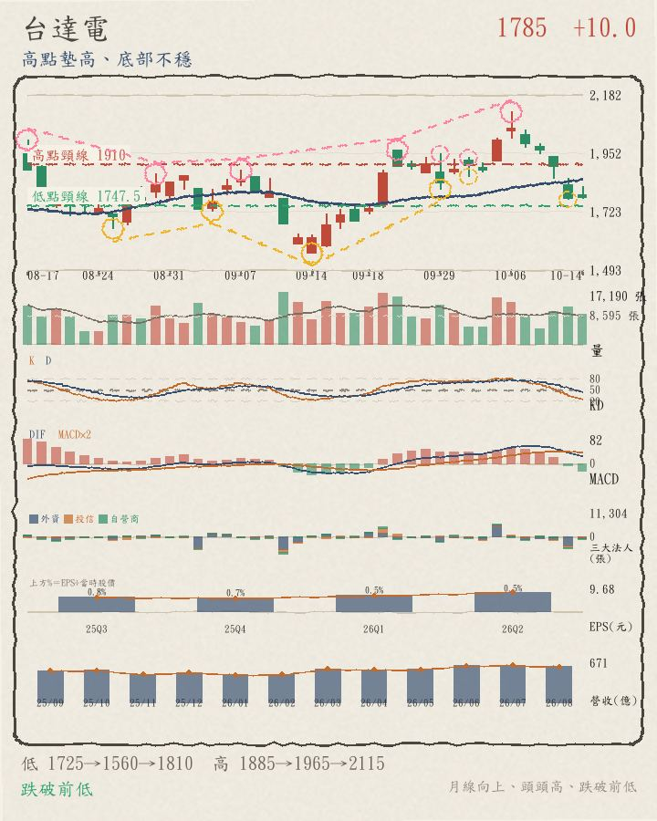
今天帶量收黑、跌破月線 1850，跌破前一個轉折低點（高點頸線 1910 還在收盤上方），高點還在墊高（但底部沒同步墊高）。
- 月線位置：收盤 1630 在月線 1850 之下；5 日線 1811 也在月線之下（短均在下）；月線向上、5 日線走平或向下
- 量能：成交量是 20 日均量的 2.37 倍，比 20 日均量大不少；收黑卻量增，量價背離
- 關鍵價位：高點頸線 1910 還沒突破、還在收盤上方 14.7%；最近轉折高點 2115（低於 22.9%）；最近轉折低點 1810（低於 9.9%）
- 轉折結構：高點 1885、1965、2115 墊高 12.2%（頭頭高），但低點 1725、1560、1810 沒有同步墊高；還沒確認的轉折低點 10-13 1770、10-15 1610；還沒確認的轉折高點 09-29 1950、10-01 1935（圖上虛線小圈）
區間或轉弱 成交金額 346.67 億・全榜第 4 名（上市第 4 名）
好條件 0/8：無
不好條件 8/8：跌破前低、今日下跌、相對大盤弱、在月線之下、量增下跌（出貨）、外資賣超、月線下彎、收盤跌破前一日低點
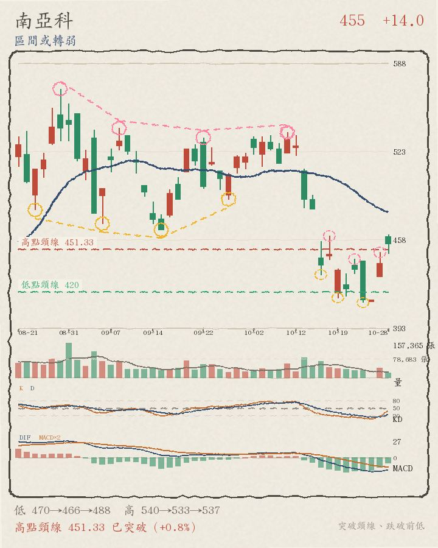
今天帶量收黑、跌破月線 505.4，跌破前一個轉折低點（高點頸線 535.8 還在收盤上方），轉折還沒走出明顯方向。
- 月線位置：收盤 439.5 在月線 505.4 之下；5 日線 493.4 也在月線之下（短均在下）；月線走平或向下、5 日線走平或向下
- 量能：成交量是 20 日均量的 1.75 倍，比 20 日均量大不少；收黑卻量增，量價背離
- 關鍵價位：高點頸線 535.8 還沒突破、還在收盤上方 18.0%；最近轉折高點 537（低於 18.2%）；最近轉折低點 488（低於 9.9%）
- 轉折結構：低點 470、465.5、488 與高點 540、533、537 都沒有明顯遞增，屬於區間震盪或轉弱；還沒確認的轉折低點 10-07 514、10-15 432.5；還沒確認的轉折高點 10-02 534、10-06 535（圖上虛線小圈）
高點墊高、底部不穩 成交金額 342.1 億・全榜第 5 名（上市第 5 名）
好條件 4/8：站上月線、月線向上、頭頭高、突破頸線
不好條件 5/8：今日下跌、相對大盤弱、量增下跌（出貨）、外資賣超、收盤跌破前一日低點
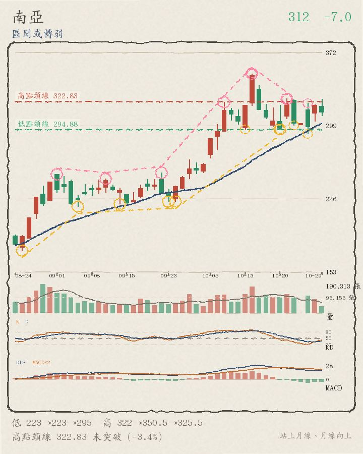
今天帶量收黑、站上月線 268.05，已站上高點頸線 249，高點還在墊高（但底部沒同步墊高）。
- 月線位置：收盤 314.5 在月線 268.05 之上；5 日線 319.1 也在月線之上（短均在上）；月線向上、5 日線向上
- 量能：成交量是 20 日均量的 1.29 倍，比 20 日均量大不少；收黑卻量增，量價背離
- 關鍵價位：高點頸線 249 已站上；最近轉折高點 322（低於 2.3%）；最近轉折低點 223（高於 41.0%）
- 轉折結構：高點 245.5、251.5、322 墊高 31.2%（頭頭高），但低點 220.5、223、223 沒有同步墊高；還沒確認的轉折低點 10-13 295、10-15 314.5；還沒確認的轉折高點 09-30 265、10-14 350.5（圖上虛線小圈）
區間或轉弱 成交金額 326.18 億・全榜第 6 名（上市第 6 名）
好條件 1/8：月線向上
不好條件 6/8：今日下跌、相對大盤弱、在月線之下、量增下跌（出貨）、外資賣超、收盤跌破前一日低點

今天帶量收黑、跌破月線 586.25，離高點頸線 646.5 還差 11.4%，轉折還沒走出明顯方向。
- 月線位置：收盤 573 在月線 586.25 之下；5 日線 614 也在月線之上（短均在上）；月線向上、5 日線走平或向下
- 量能：成交量是 20 日均量的 1.32 倍，比 20 日均量大不少；收黑卻量增，量價背離
- 關鍵價位：高點頸線 646.5 還沒突破，差 11.4%；最近轉折高點 686（低於 16.5%）；最近轉折低點 548（高於 4.6%）
- 轉折結構：低點 520、548、548 與高點 605、601、686 都沒有明顯遞增，屬於區間震盪或轉弱；還沒確認的轉折低點 10-13 580、10-15 570；還沒確認的轉折高點 10-05 658、10-14 635（圖上虛線小圈）
區間或轉弱 成交金額 317.06 億・全榜第 7 名（上市第 7 名）
好條件 2/8：站上月線、月線向上
不好條件 5/8：今日下跌、相對大盤弱、量增下跌（出貨）、外資賣超、收盤跌破前一日低點
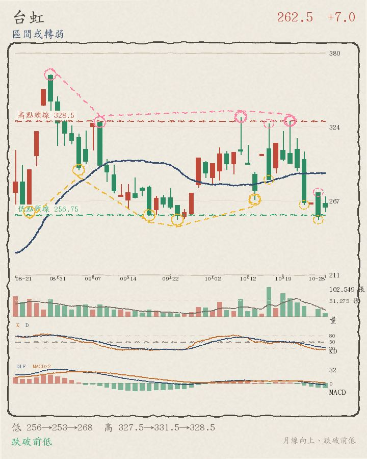
今天帶量收黑、站上月線 281.975，離高點頸線 328.5 還差 13.7%，轉折還沒走出明顯方向。
- 月線位置：收盤 283.5 在月線 281.975 之上；5 日線 292.7 也在月線之上（短均在上）；月線向上、5 日線走平或向下
- 量能：成交量是 20 日均量的 5.05 倍，比 20 日均量大不少；收黑卻量增，量價背離
- 關鍵價位：高點頸線 328.5 還沒突破，差 13.7%；最近轉折高點 331.5（低於 14.5%）；最近轉折低點 253（高於 12.1%）
- 轉折結構：低點 291、256.5、253 與高點 364、327.5、331.5 都沒有明顯遞增，屬於區間震盪或轉弱；還沒確認的轉折低點 10-13 268.5、10-15 283.5；還沒確認的轉折高點 10-05 308、10-15 326.5（圖上虛線小圈）
高點墊高、底部不穩 成交金額 316.21 億・全榜第 8 名（上市第 8 名）
好條件 3/8：月線向上、頭頭高、突破頸線
不好條件 6/8：今日下跌、相對大盤弱、在月線之下、量增下跌（出貨）、外資賣超、收盤跌破前一日低點

今天帶量收黑、跌破月線 1154.15，已站上高點頸線 1005，高點還在墊高（但底部沒同步墊高）。
- 月線位置：收盤 1075 在月線 1154.15 之下；5 日線 1193 也在月線之上（短均在上）；月線向上、5 日線走平或向下
- 量能：成交量是 20 日均量的 2.11 倍，比 20 日均量大不少；收黑卻量增，量價背離
- 關鍵價位：高點頸線 1005 已站上；最近轉折高點 1420（低於 24.3%）；最近轉折低點 932（高於 15.3%）
- 轉折結構：高點 1005、1200、1420 墊高 41.3%（頭頭高），但低點 1030、873、932 沒有同步墊高；還沒確認的轉折低點 10-06 1285、10-15 1070；還沒確認的轉折高點 10-07 1345（圖上虛線小圈）
區間或轉弱 成交金額 303.34 億・全榜第 9 名（上市第 9 名）
好條件 1/8：月線向上
不好條件 6/8：今日下跌、相對大盤弱、在月線之下、量增下跌（出貨）、外資賣超、收盤跌破前一日低點
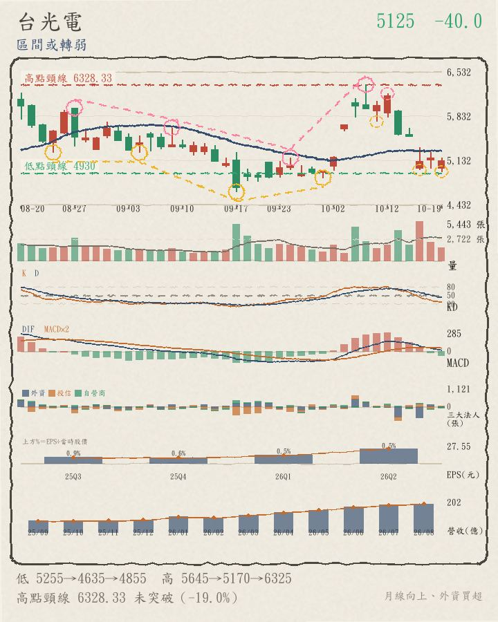
今天帶量收黑、跌破月線 5280.25，離高點頸線 6328.33 還差 19.1%，轉折還沒走出明顯方向。
- 月線位置：收盤 5120 在月線 5280.25 之下；5 日線 5667 也在月線之上（短均在上）；月線向上、5 日線向上
- 量能：成交量是 20 日均量的 2.57 倍，比 20 日均量大不少；收黑卻量增，量價背離
- 關鍵價位：高點頸線 6328.33 還沒突破，差 19.1%；最近轉折高點 6325（低於 19.1%）；最近轉折低點 4855（高於 5.5%）
- 轉折結構：低點 5255、4635、4855 與高點 5645、5170、6325 都沒有明顯遞增，屬於區間震盪或轉弱；還沒確認的轉折低點 10-08 5745、10-15 4980；還沒確認的轉折高點 10-12 6190（圖上虛線小圈）
底部墊高、未過前高 成交金額 290.68 億・全榜第 10 名（上市第 10 名）
好條件 2/8：月線向上、底底高
不好條件 7/8：跌破前低、今日下跌、相對大盤弱、在月線之下、量增下跌（出貨）、外資賣超、收盤跌破前一日低點
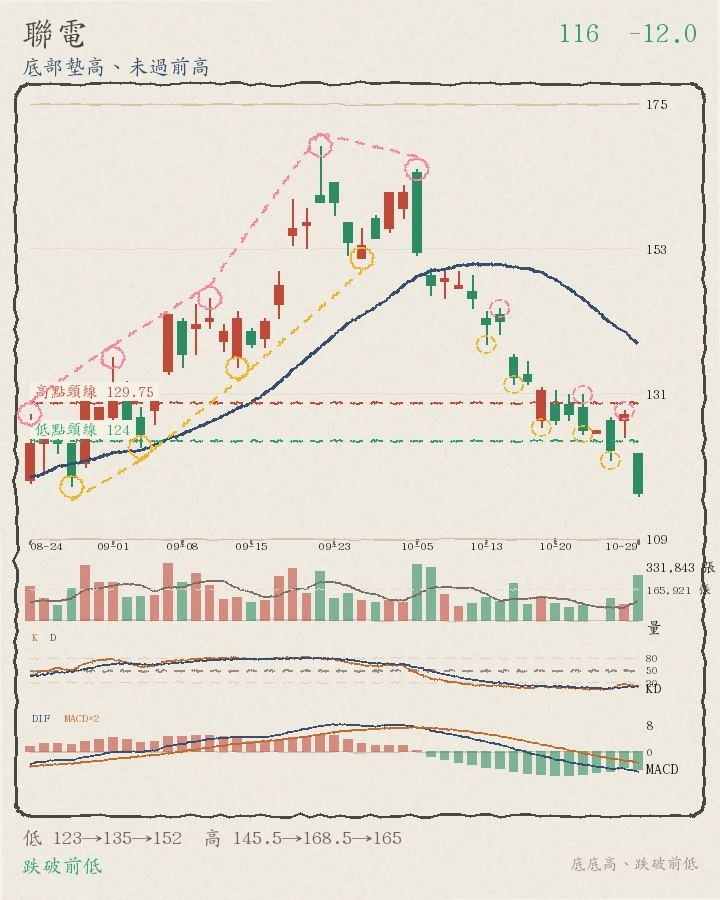
今天帶量收黑、跌破月線 150.225，跌破前一個轉折低點（高點頸線 146.5 還在收盤上方），底部還在墊高（但高點沒同步創高）。
- 月線位置：收盤 133.5 在月線 150.225 之下；5 日線 142 也在月線之下（短均在下）；月線向上、5 日線走平或向下
- 量能：成交量是 20 日均量的 1.33 倍，比 20 日均量大不少；收黑卻量增，量價背離
- 關鍵價位：高點頸線 146.5 還沒突破、還在收盤上方 8.9%；最近轉折高點 165（低於 19.1%）；最近轉折低點 151.5（低於 11.9%）
- 轉折結構：低點 123、135、151.5 墊高 23.2%（底底高），但高點 145.5、168.5、165 沒有同步創高；還沒確認的轉折低點 10-13 138.5、10-15 132.5；還沒確認的轉折高點 10-07 150、10-14 144（圖上虛線小圈）
上升趨勢（底底高＋頭頭高） 成交金額 266.72 億・全榜第 11 名（上市第 11 名）
好條件 3/8：月線向上、底底高、頭頭高
不好條件 7/8：跌破前低、今日下跌、相對大盤弱、在月線之下、量增下跌（出貨）、外資賣超、收盤跌破前一日低點

今天帶量收黑、跌破月線 694.7，跌破前一個轉折低點（高點頸線 762 還在收盤上方），轉折結構仍是底底高＋頭頭高。
- 月線位置：收盤 673 在月線 694.7 之下；5 日線 733.2 也在月線之上（短均在上）；月線向上、5 日線向上
- 量能：成交量是 20 日均量的 2.89 倍，比 20 日均量大不少；收黑卻量增，量價背離
- 關鍵價位：高點頸線 762 還沒突破、還在收盤上方 11.7%；最近轉折高點 765（低於 12.0%）；最近轉折低點 715（低於 5.9%）
- 轉折結構：低點 592、678、715 一路墊高 20.8%、高點 711、758、765 也一路墊高 7.6%，是底底高＋頭頭高；還沒確認的轉折低點 10-13 731、10-15 673；還沒確認的轉折高點 09-30 723、10-14 763（圖上虛線小圈）
剛突破前高 成交金額 222.02 億・全榜第 13 名（上市第 12 名）
好條件 3/8：站上月線、月線向上、頭頭高
不好條件 5/8：今日下跌、相對大盤弱、量增下跌（出貨）、外資賣超、收盤跌破前一日低點
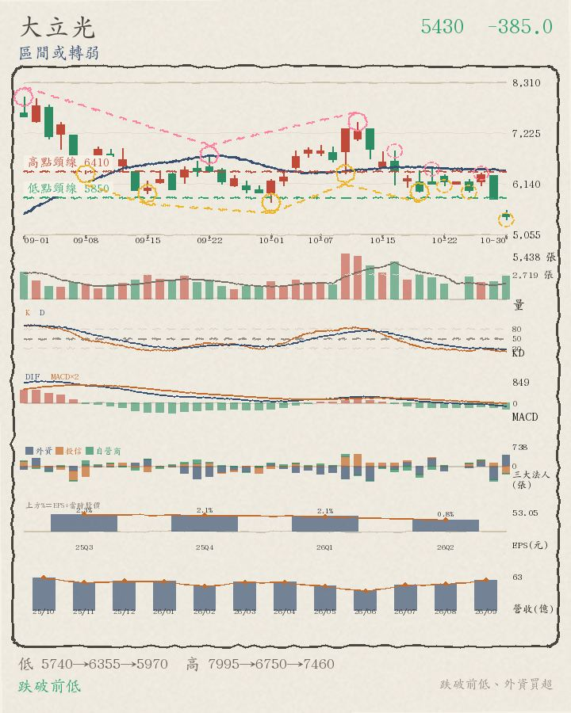
今天帶量收黑、站上月線 6480.25，離高點頸線 6860 還差 3.7%，高點還在墊高（但底部沒同步墊高）。
- 月線位置：收盤 6605 在月線 6480.25 之上；5 日線 6949 也在月線之上（短均在上）；月線向上、5 日線向上
- 量能：成交量是 20 日均量的 1.38 倍，比 20 日均量大不少；收黑卻量增，量價背離
- 關鍵價位：高點頸線 6860 還沒突破，差 3.7%；最近轉折高點 6750（低於 2.1%）；最近轉折低點 6355（高於 3.9%）
- 轉折結構：高點 4770、7995、6750 墊高 10.5%（頭頭高），但低點 5930、5740、6355 沒有同步墊高；還沒確認的轉折低點 09-29 5940、10-15 6485；還沒確認的轉折高點 10-07 6970、10-13 7460（圖上虛線小圈）
區間或轉弱 成交金額 194.91 億・全榜第 14 名（上市第 13 名）
好條件 0/8：無
不好條件 8/8：跌破前低、今日下跌、相對大盤弱、在月線之下、量增下跌（出貨）、外資賣超、月線下彎、收盤跌破前一日低點

今天帶量收黑、跌破月線 2151.75，跌破前一個轉折低點（高點頸線 2297.41 還在收盤上方），轉折還沒走出明顯方向。
- 月線位置：收盤 1905 在月線 2151.75 之下；5 日線 2146 也在月線之下（短均在下）；月線走平或向下、5 日線走平或向下
- 量能：成交量是 20 日均量的 3.20 倍，比 20 日均量大不少；收黑卻量增，量價背離
- 關鍵價位：高點頸線 2297.41 還沒突破、還在收盤上方 17.1%；最近轉折高點 2335（低於 18.4%）；最近轉折低點 2080（低於 8.4%）
- 轉折結構：低點 2085、2075、2080 與高點 2259.63、2875、2335 都沒有明顯遞增，屬於區間震盪或轉弱；還沒確認的轉折低點 10-08 2200、10-15 1905；還沒確認的轉折高點 10-12 2310、10-14 2285（圖上虛線小圈）
上升趨勢（底底高＋頭頭高） 成交金額 185.6 億・全榜第 15 名（上市第 14 名）
好條件 4/8：月線向上、底底高、頭頭高、外資買超
不好條件 6/8：跌破前低、今日下跌、相對大盤弱、在月線之下、量增下跌（出貨）、收盤跌破前一日低點

今天帶量收黑、跌破月線 7821.25，跌破前一個轉折低點（高點頸線 8546.67 還在收盤上方），轉折結構仍是底底高＋頭頭高。
- 月線位置：收盤 7670 在月線 7821.25 之下；5 日線 8094 也在月線之上（短均在上）；月線向上、5 日線走平或向下
- 量能：成交量是 20 日均量的 1.59 倍，比 20 日均量大不少；收黑卻量增，量價背離
- 關鍵價位：高點頸線 8546.67 還沒突破、還在收盤上方 10.3%；最近轉折高點 8750（低於 12.3%）；最近轉折低點 7730（低於 0.8%）
- 轉折結構：低點 5680、5850、7730 一路墊高 36.1%、高點 6490、8545、8750 也一路墊高 34.8%，是底底高＋頭頭高；還沒確認的轉折低點 10-13 7700、10-15 7570；還沒確認的轉折高點 10-14 8345（圖上虛線小圈）
上升趨勢（底底高＋頭頭高） 成交金額 170.39 億・全榜第 16 名（上市第 15 名）
好條件 8/8：站上月線、月線向上、底底高、頭頭高、突破頸線、相對大盤強、外資買超、量價攻擊（收紅＋大量）
不好條件 0/8：無
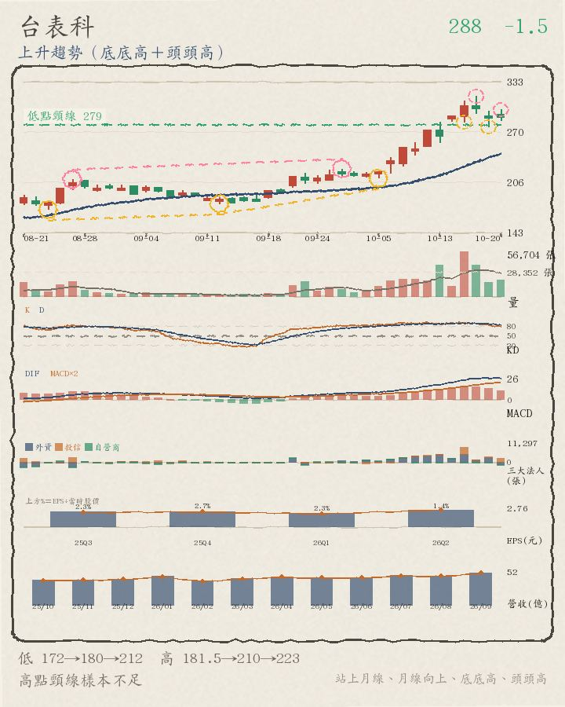
今天帶量收紅、站上月線 226.1，已站上高點頸線 222，轉折結構仍是底底高＋頭頭高。
- 月線位置：收盤 303 在月線 226.1 之上；5 日線 275.5 也在月線之上（短均在上）；月線向上、5 日線向上
- 量能：成交量是 20 日均量的 5.00 倍，比 20 日均量大不少；收紅又量增，量價配合
- 關鍵價位：高點頸線 222 已站上；最近轉折高點 223（高於 35.9%）；最近轉折低點 211.5（高於 43.3%）
- 轉折結構：低點 172、179.5、211.5 一路墊高 23.0%、高點 181.5、210、223 也一路墊高 22.9%，是底底高＋頭頭高；還沒確認的轉折低點 10-15 282；還沒確認的轉折高點 10-15 309（圖上虛線小圈）
區間或轉弱 成交金額 162.83 億・全榜第 17 名（上市第 16 名）
好條件 2/8：站上月線、月線向上
不好條件 4/8：今日下跌、相對大盤弱、量增下跌（出貨）、外資賣超

今天帶量收黑、站上月線 1128.2，離高點頸線 1260 還差 5.6%，轉折還沒走出明顯方向。
- 月線位置：收盤 1190 在月線 1128.2 之上；5 日線 1228 也在月線之上（短均在上）；月線向上、5 日線向上
- 量能：成交量是 20 日均量的 1.29 倍，比 20 日均量大不少；收黑卻量增，量價背離
- 關鍵價位：高點頸線 1260 還沒突破，差 5.6%；最近轉折高點 1310（低於 9.2%）；最近轉折低點 950（高於 25.3%）
- 轉折結構：低點 915、1030、950 與高點 1145、1085、1310 都沒有明顯遞增，屬於區間震盪或轉弱；還沒確認的轉折低點 10-13 1120、10-15 1160；還沒確認的轉折高點 09-30 1160、10-14 1275（圖上虛線小圈）
底部墊高、未過前高 成交金額 146.32 億・全榜第 19 名（上市第 17 名）
好條件 3/8：站上月線、月線向上、底底高
不好條件 4/8：今日下跌、相對大盤弱、外資賣超、收盤跌破前一日低點

今天收黑、站上月線 1306.5，離高點頸線 1555 還差 13.5%，底部還在墊高（但高點沒同步創高）。
- 月線位置：收盤 1345 在月線 1306.5 之上；5 日線 1426 也在月線之上（短均在上）；月線向上、5 日線走平或向下
- 量能：成交量是 20 日均量的 0.99 倍，跟 20 日均量差不多
- 關鍵價位：高點頸線 1555 還沒突破，差 13.5%；最近轉折高點 1560（低於 13.8%）；最近轉折低點 1050（高於 28.1%）
- 轉折結構：低點 1010、1025、1050 墊高 4.0%（底底高），但高點 1335、1125、1560 沒有同步創高；還沒確認的轉折低點 10-13 1360、10-15 1320；還沒確認的轉折高點 10-05 1550、10-14 1440（圖上虛線小圈）
剛突破前高 成交金額 141.92 億・全榜第 20 名（上市第 18 名）
好條件 5/8：站上月線、月線向上、頭頭高、相對大盤強、量價攻擊（收紅＋大量）
不好條件 1/8：外資賣超

今天帶量收紅、站上月線 994.55，離高點頸線 1160 還差 3.9%，高點還在墊高（但底部沒同步墊高）。
- 月線位置：收盤 1115 在月線 994.55 之上；5 日線 1097 也在月線之上（短均在上）；月線向上、5 日線向上
- 量能：成交量是 20 日均量的 2.05 倍，比 20 日均量大不少；收紅又量增，量價配合
- 關鍵價位：高點頸線 1160 還沒突破，差 3.9%；最近轉折高點 1045（高於 6.7%）；最近轉折低點 1010（高於 10.4%）
- 轉折結構：高點 1090、1140、1045 墊高 12.4%（頭頭高），但低點 906、869、1010 沒有同步墊高；還沒確認的轉折低點 10-01 871、10-15 1010；還沒確認的轉折高點 10-13 1175、10-15 1165（圖上虛線小圈）
區間或轉弱 成交金額 134.13 億・全榜第 21 名（上市第 19 名）
好條件 1/8：月線向上
不好條件 7/8：跌破前低、今日下跌、相對大盤弱、在月線之下、量增下跌（出貨）、外資賣超、收盤跌破前一日低點
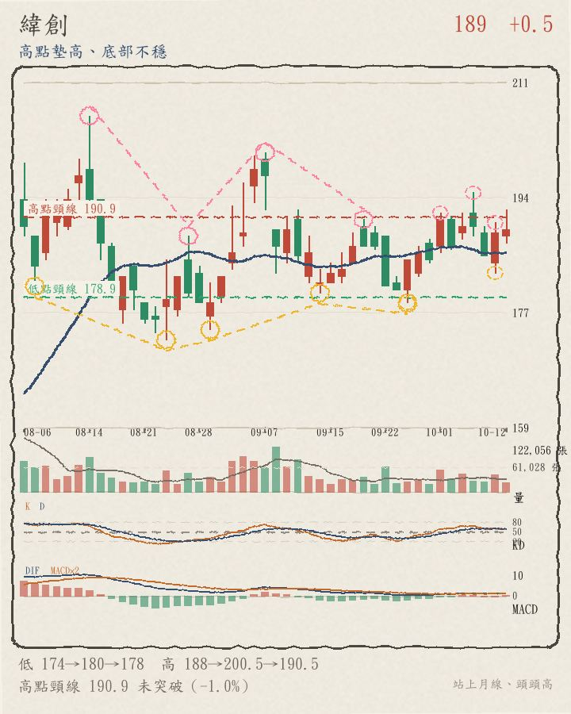
今天帶量收黑、跌破月線 185.45，跌破前一個轉折低點（高點頸線 191.3 還在收盤上方），轉折還沒走出明顯方向。
- 月線位置：收盤 176 在月線 185.45 之下；5 日線 185.6 也在月線之上（短均在上）；月線向上、5 日線走平或向下
- 量能：成交量是 20 日均量的 2.20 倍，比 20 日均量大不少；收黑卻量增，量價背離
- 關鍵價位：高點頸線 191.3 還沒突破、還在收盤上方 8.0%；最近轉折高點 194.5（低於 9.5%）；最近轉折低點 182.5（低於 3.6%）
- 轉折結構：低點 179.5、178、182.5 與高點 200.5、190.5、194.5 都沒有明顯遞增，屬於區間震盪或轉弱；還沒確認的轉折低點 10-13 185.5、10-15 173.5；還沒確認的轉折高點 10-01 191.5、10-12 192（圖上虛線小圈）
底部墊高、未過前高 成交金額 131.41 億・全榜第 22 名（上市第 20 名）
好條件 2/8：月線向上、底底高
不好條件 5/8：今日下跌、相對大盤弱、在月線之下、外資賣超、收盤跌破前一日低點

今天收黑、成交量也比平均少、跌破月線 523，離高點頸線 559 還差 7.2%，底部還在墊高（但高點沒同步創高）。
- 月線位置：收盤 519 在月線 523 之下；5 日線 562.2 也在月線之上（短均在上）；月線向上、5 日線走平或向下
- 量能：成交量是 20 日均量的 0.77 倍，比 20 日均量少很多
- 關鍵價位：高點頸線 559 還沒突破，差 7.2%；最近轉折高點 613（低於 15.3%）；最近轉折低點 463.5（高於 12.0%）
- 轉折結構：低點 421.5、446.5、463.5 墊高 10.0%（底底高），但高點 550、505、613 沒有同步創高；還沒確認的轉折低點 10-13 525、10-15 518；還沒確認的轉折高點 10-06 604、10-14 568（圖上虛線小圈）
區間或轉弱 成交金額 129.2 億・全榜第 23 名（上市第 21 名）
好條件 0/8：無
不好條件 8/8：跌破前低、今日下跌、相對大盤弱、在月線之下、量增下跌（出貨）、外資賣超、月線下彎、收盤跌破前一日低點
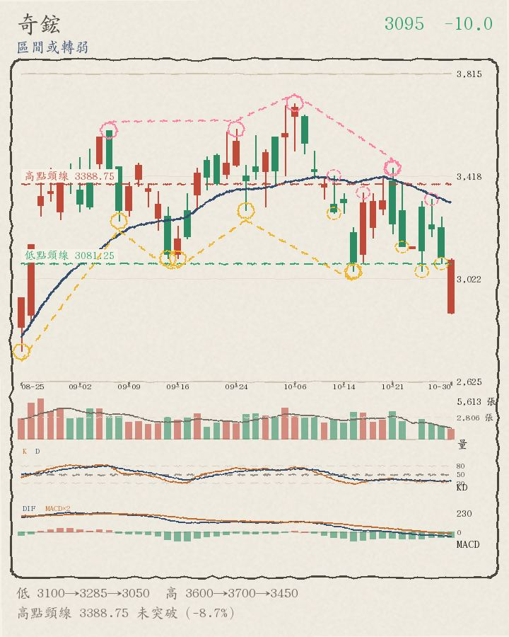
今天帶量收黑、跌破月線 3392，跌破前一個轉折低點（高點頸線 3370 還在收盤上方），轉折還沒走出明顯方向。
- 月線位置：收盤 3085 在月線 3392 之下；5 日線 3301 也在月線之下（短均在下）；月線走平或向下、5 日線走平或向下
- 量能：成交量是 20 日均量的 1.47 倍，比 20 日均量大不少；收黑卻量增，量價背離
- 關鍵價位：高點頸線 3370 還沒突破、還在收盤上方 8.5%；最近轉折高點 3700（低於 16.6%）；最近轉折低點 3285（低於 6.1%）
- 轉折結構：低點 3100、3100、3285 與高點 3595、3600、3700 都沒有明顯遞增，屬於區間震盪或轉弱；還沒確認的轉折低點 10-13 3275、10-15 3050；還沒確認的轉折高點 09-30 3575、10-13 3420（圖上虛線小圈）
高點墊高、底部不穩 成交金額 127.85 億・全榜第 24 名（上市第 22 名）
好條件 4/8：站上月線、月線向上、頭頭高、突破頸線
不好條件 4/8：今日下跌、相對大盤弱、量增下跌（出貨）、外資賣超
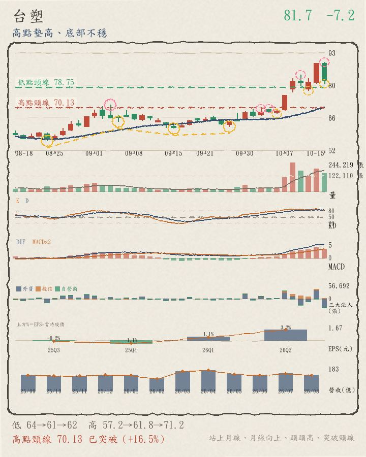
今天帶量收黑、站上月線 70.24，已站上高點頸線 70.13，高點還在墊高（但底部沒同步墊高）。
- 月線位置：收盤 81.7 在月線 70.24 之上；5 日線 82.7 也在月線之上（短均在上）；月線向上、5 日線向上
- 量能：成交量是 20 日均量的 2.51 倍，比 20 日均量大不少；收黑卻量增，量價背離
- 關鍵價位：高點頸線 70.13 已站上；最近轉折高點 71.2（高於 14.7%）；最近轉折低點 62（高於 31.8%）
- 轉折結構：高點 57.2、61.8、71.2 墊高 24.5%（頭頭高），但低點 64.1、61.2、62 沒有同步墊高；還沒確認的轉折低點 10-13 77.3、10-15 80.2；還沒確認的轉折高點 10-12 84、10-15 89.4（圖上虛線小圈）
區間或轉弱 成交金額 127.38 億・全榜第 25 名（上市第 23 名）
好條件 2/8：站上月線、月線向上
不好條件 4/8：今日下跌、相對大盤弱、外資賣超、收盤跌破前一日低點
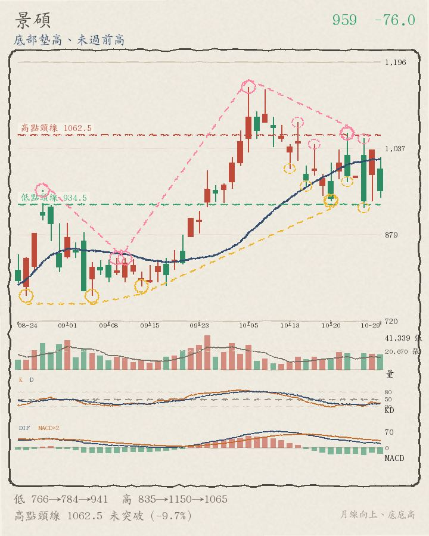
今天收黑、成交量也比平均少、站上月線 965.5，離高點頸線 1147.5 還差 14.7%，轉折還沒走出明顯方向。
- 月線位置：收盤 979 在月線 965.5 之上；5 日線 1040.8 也在月線之上（短均在上）；月線向上、5 日線走平或向下
- 量能：成交量是 20 日均量的 0.73 倍，比 20 日均量少很多
- 關鍵價位：高點頸線 1147.5 還沒突破，差 14.7%；最近轉折高點 1150（低於 14.9%）；最近轉折低點 784（高於 24.9%）
- 轉折結構：低點 766、766、784 與高點 835、835、1150 都沒有明顯遞增，屬於區間震盪或轉弱；還沒確認的轉折低點 10-13 1000、10-15 968；還沒確認的轉折高點 10-07 1145、10-14 1085（圖上虛線小圈）
區間或轉弱 成交金額 126.19 億・全榜第 26 名（上市第 24 名）
好條件 1/8：月線向上
不好條件 7/8：跌破前低、今日下跌、相對大盤弱、在月線之下、量增下跌（出貨）、外資賣超、收盤跌破前一日低點

今天帶量收黑、跌破月線 292.925，跌破前一個轉折低點（高點頸線 306.83 還在收盤上方），轉折還沒走出明顯方向。
- 月線位置：收盤 272 在月線 292.925 之下；5 日線 295.6 也在月線之上（短均在上）；月線向上、5 日線走平或向下
- 量能：成交量是 20 日均量的 1.52 倍，比 20 日均量大不少；收黑卻量增，量價背離
- 關鍵價位：高點頸線 306.83 還沒突破、還在收盤上方 11.4%；最近轉折高點 310（低於 12.3%）；最近轉折低點 284（低於 4.2%）
- 轉折結構：低點 259、253、284 與高點 283.5、330、310 都沒有明顯遞增，屬於區間震盪或轉弱；還沒確認的轉折低點 10-13 290.5、10-15 268；還沒確認的轉折高點 10-05 303.5、10-13 307（圖上虛線小圈）
底部墊高、未過前高 成交金額 124.36 億・全榜第 27 名（上市第 25 名）
好條件 1/8：底底高
不好條件 7/8：跌破前低、今日下跌、相對大盤弱、在月線之下、外資賣超、月線下彎、收盤跌破前一日低點
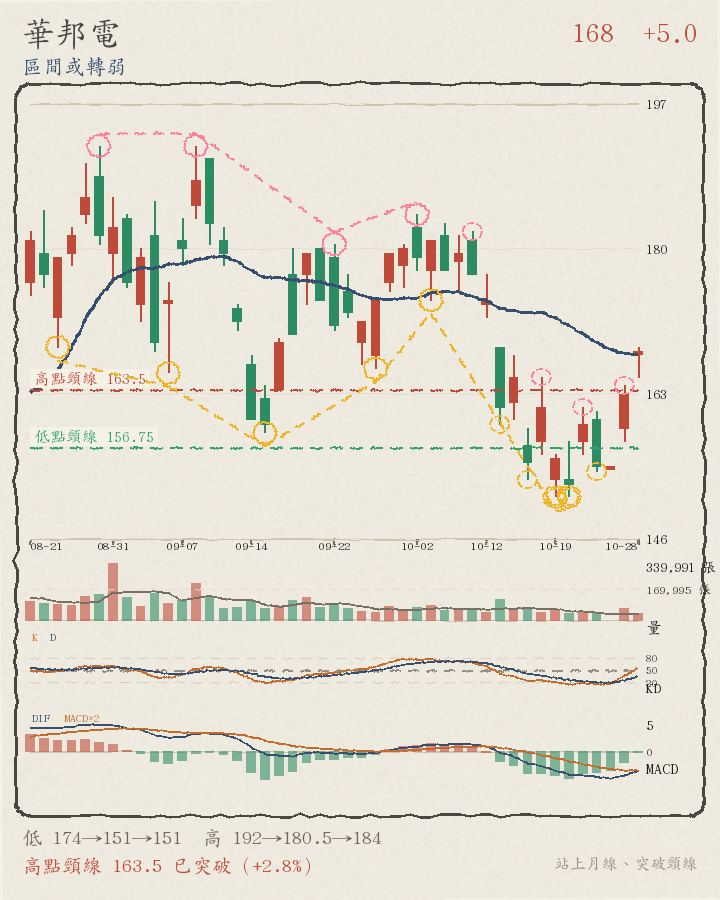
今天收黑、跌破月線 172.5，跌破前一個轉折低點（高點頸線 182.38 還在收盤上方），底部還在墊高（但高點沒同步創高）。
- 月線位置：收盤 155 在月線 172.5 之下；5 日線 166.5 也在月線之下（短均在下）；月線走平或向下、5 日線走平或向下
- 量能：成交量是 20 日均量的 1.00 倍，跟 20 日均量差不多
- 關鍵價位：高點頸線 182.38 還沒突破、還在收盤上方 15.0%；最近轉折高點 184（低於 15.8%）；最近轉折低點 174（低於 10.9%）
- 轉折結構：低點 158.5、166、174 墊高 9.8%（底底高），但高點 192、180.5、184 沒有同步創高；還沒確認的轉折低點 10-13 159.5、10-15 153；還沒確認的轉折高點 10-06 183、10-08 182（圖上虛線小圈）
高點墊高、底部不穩 成交金額 120.41 億・全榜第 28 名（上市第 26 名）
好條件 2/8：月線向上、頭頭高
不好條件 4/8：今日下跌、相對大盤弱、在月線之下、外資賣超

今天收黑、成交量也比平均少、跌破月線 35.04，離高點頸線 36.58 還差 4.6%，高點還在墊高（但底部沒同步墊高）。
- 月線位置：收盤 34.9 在月線 35.04 之下；5 日線 35.49 也在月線之上（短均在上）；月線向上、5 日線走平或向下
- 量能：成交量是 20 日均量的 0.63 倍，比 20 日均量少很多
- 關鍵價位：高點頸線 36.58 還沒突破，差 4.6%；最近轉折高點 43.55（低於 19.9%）；最近轉折低點 27.75（高於 25.8%）
- 轉折結構：高點 32.2、36.65、43.55 墊高 35.2%（頭頭高），但低點 25.25、24.6、27.75 沒有同步墊高；還沒確認的轉折低點 10-13 33.75；還沒確認的轉折高點 10-15 36.5（圖上虛線小圈）
上升趨勢（底底高＋頭頭高） 成交金額 118.97 億・全榜第 29 名（上市第 27 名）
好條件 4/8：站上月線、月線向上、底底高、頭頭高
不好條件 4/8：今日下跌、相對大盤弱、量增下跌（出貨）、外資賣超

今天帶量收黑、站上月線 805.9，離高點頸線 876.25 還差 7.4%，轉折結構仍是底底高＋頭頭高。
- 月線位置：收盤 811 在月線 805.9 之上；5 日線 837.6 也在月線之上（短均在上）；月線向上、5 日線向上
- 量能：成交量是 20 日均量的 1.41 倍，比 20 日均量大不少；收黑卻量增，量價背離
- 關鍵價位：高點頸線 876.25 還沒突破，差 7.4%；最近轉折高點 888（低於 8.7%）；最近轉折低點 796（高於 1.9%）
- 轉折結構：低點 717、760、796 一路墊高 11.0%、高點 856、881、888 也一路墊高 3.7%，是底底高＋頭頭高；還沒確認的轉折低點 10-13 793；還沒確認的轉折高點 10-14 880（圖上虛線小圈）
底部墊高、未過前高 成交金額 118.46 億・全榜第 30 名（上市第 28 名）
好條件 2/8：底底高、相對大盤強
不好條件 7/8：跌破前低、今日下跌、在月線之下、量增下跌（出貨）、外資賣超、月線下彎、收盤跌破前一日低點
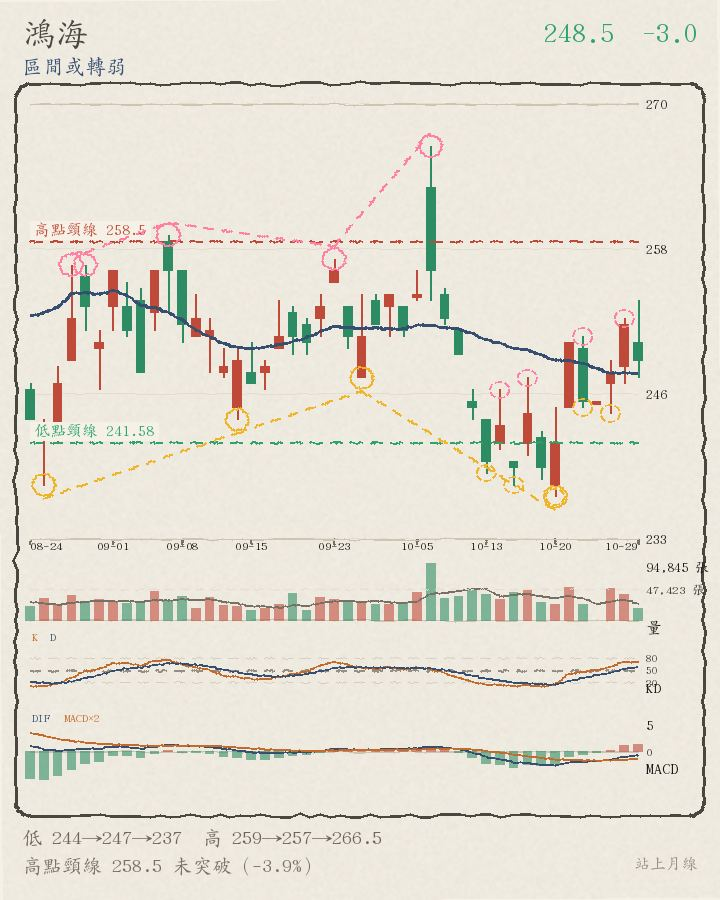
今天帶量收黑、跌破月線 249.5，跌破前一個轉折低點（高點頸線 253 還在收盤上方），底部還在墊高（但高點沒同步創高）。
- 月線位置：收盤 239.5 在月線 249.5 之下；5 日線 243.2 也在月線之下（短均在下）；月線走平或向下、5 日線走平或向下
- 量能：成交量是 20 日均量的 1.39 倍，比 20 日均量大不少；收黑卻量增，量價背離
- 關鍵價位：高點頸線 253 還沒突破、還在收盤上方 5.3%；最近轉折高點 266.5（低於 10.1%）；最近轉折低點 247（低於 3.0%）
- 轉折結構：低點 238、243.5、247 墊高 3.8%（底底高），但高點 259、257、266.5 沒有同步創高；還沒確認的轉折低點 10-13 239、10-15 238；還沒確認的轉折高點 10-01 254、10-14 246（圖上虛線小圈）
高點墊高、底部不穩 成交金額 118.12 億・全榜第 31 名（上市第 29 名）
好條件 3/8：站上月線、月線向上、頭頭高
不好條件 5/8：今日下跌、相對大盤弱、量增下跌（出貨）、外資賣超、收盤跌破前一日低點
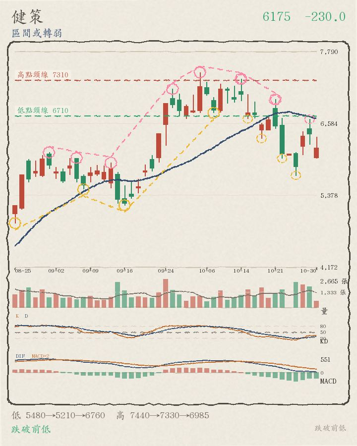
今天帶量收黑、站上月線 6499.5，離高點頸線 7293.75 還差 7.2%，高點還在墊高（但底部沒同步墊高）。
- 月線位置：收盤 6765 在月線 6499.5 之上；5 日線 7030 也在月線之上（短均在上）；月線向上、5 日線向上
- 量能：成交量是 20 日均量的 1.45 倍，比 20 日均量大不少；收黑卻量增，量價背離
- 關鍵價位：高點頸線 7293.75 還沒突破，差 7.2%；最近轉折高點 7440（低於 9.1%）；最近轉折低點 6760（高於 0.1%）
- 轉折結構：高點 5920、7160、7440 墊高 25.7%（頭頭高），但低點 5480、5210、6760 沒有同步墊高；還沒確認的轉折低點 10-05 6760、10-15 6660；還沒確認的轉折高點 10-08 7245、10-14 7330（圖上虛線小圈）
區間或轉弱 成交金額 100.78 億・全榜第 32 名（上市第 30 名）
好條件 0/8：無
不好條件 8/8：跌破前低、今日下跌、相對大盤弱、在月線之下、量增下跌（出貨）、外資賣超、月線下彎、收盤跌破前一日低點

今天帶量收黑、跌破月線 72.06，跌破前一個轉折低點（高點頸線 75.78 還在收盤上方），轉折還沒走出明顯方向。
- 月線位置：收盤 66.2 在月線 72.06 之下；5 日線 69.66 也在月線之下（短均在下）；月線走平或向下、5 日線走平或向下
- 量能：成交量是 20 日均量的 1.34 倍，比 20 日均量大不少；收黑卻量增，量價背離
- 關鍵價位：高點頸線 75.78 還沒突破、還在收盤上方 12.6%；最近轉折高點 78.1（低於 15.2%）；最近轉折低點 70.5（低於 6.1%）
- 轉折結構：低點 67、66.7、70.5 與高點 75.3、74.7、78.1 都沒有明顯遞增，屬於區間震盪或轉弱；還沒確認的轉折低點 10-13 66.8、10-15 66；還沒確認的轉折高點 10-08 75.4、10-14 71.5（圖上虛線小圈）
上升趨勢（底底高＋頭頭高） 成交金額 97.79 億・全榜第 33 名（上市第 31 名）
好條件 6/8：站上月線、月線向上、底底高、頭頭高、相對大盤強、外資買超
不好條件 1/8：量增下跌（出貨）
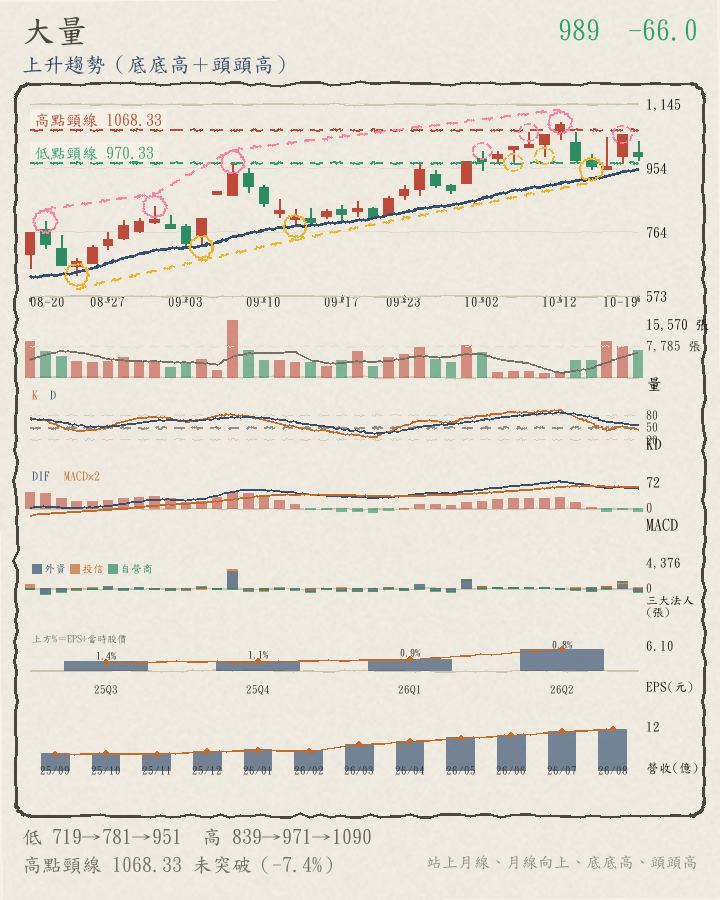
今天帶量收黑、站上月線 930，離高點頸線 1065 還差 9.9%，轉折結構仍是底底高＋頭頭高。
- 月線位置：收盤 960 在月線 930 之上；5 日線 1007.4 也在月線之上（短均在上）；月線向上、5 日線向上
- 量能：成交量是 20 日均量的 2.34 倍，比 20 日均量大不少；收黑卻量增，量價背離
- 關鍵價位：高點頸線 1065 還沒突破，差 9.9%；最近轉折高點 1090（低於 11.9%）；最近轉折低點 781（高於 22.9%）
- 轉折結構：低點 635、719、781 一路墊高 23.0%、高點 839、971、1090 也一路墊高 29.9%，是底底高＋頭頭高；還沒確認的轉折低點 10-08 990、10-14 951；還沒確認的轉折高點 10-07 1060、10-15 1045（圖上虛線小圈）
剛突破前高 成交金額 90.46 億・全榜第 35 名（上市第 32 名）
好條件 3/8：站上月線、月線向上、頭頭高
不好條件 6/8：跌破前低、今日下跌、相對大盤弱、量增下跌（出貨）、外資賣超、收盤跌破前一日低點
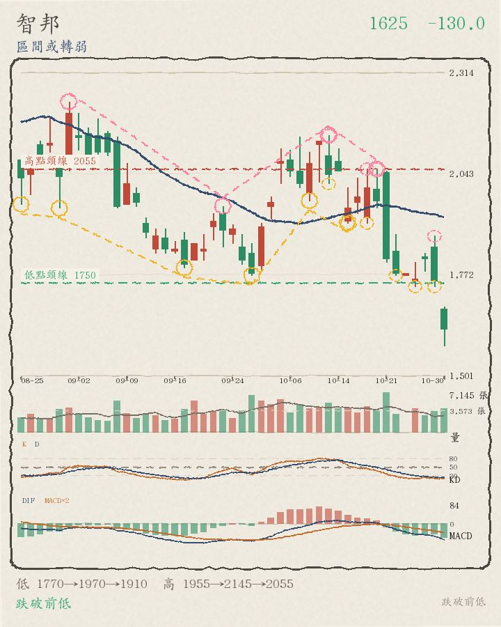
今天帶量收黑、站上月線 1935.25，跌破前一個轉折低點（高點頸線 2131.67 還在收盤上方），高點還在墊高（但底部沒同步墊高）。
- 月線位置：收盤 1950 在月線 1935.25 之上；5 日線 2048 也在月線之上（短均在上）；月線向上、5 日線向上
- 量能：成交量是 20 日均量的 1.11 倍，比 20 日均量大一些；收黑卻量增，量價背離
- 關鍵價位：高點頸線 2131.67 還沒突破、還在收盤上方 8.5%；最近轉折高點 1955（低於 0.3%）；最近轉折低點 1970（低於 1.0%）
- 轉折結構：高點 2385、2235、1955 墊高 9.7%（頭頭高），但低點 1790、1770、1970 沒有同步墊高；還沒確認的轉折低點 10-13 2015、10-15 1910；還沒確認的轉折高點 10-07 2140、10-13 2145（圖上虛線小圈）
世芯-KY 3661 上市
3705 -235.0
區間或轉弱 成交金額 86 億・全榜第 38 名（上市第 33 名）
好條件 1/8：月線向上
不好條件 5/8：今日下跌、相對大盤弱、在月線之下、外資賣超、收盤跌破前一日低點
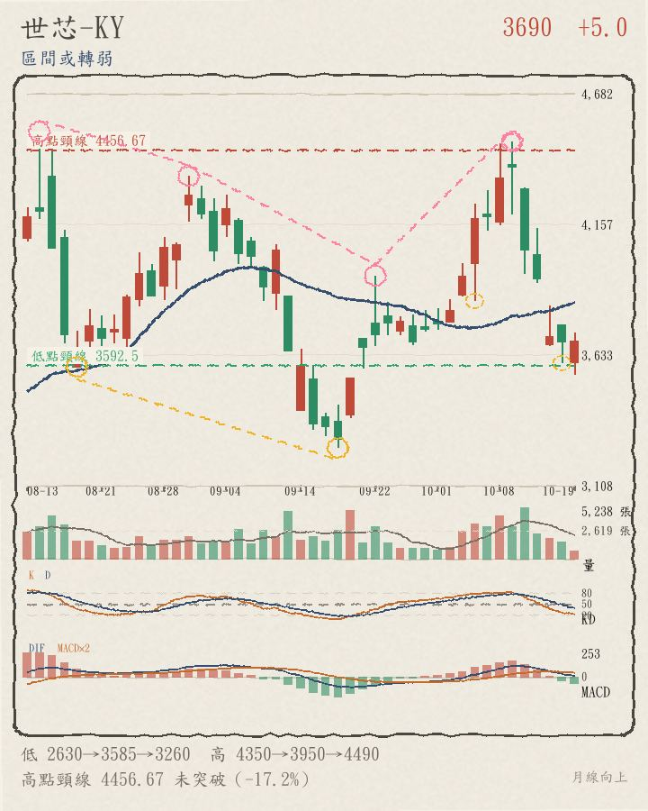
今天收黑、成交量也比平均少、跌破月線 3810.25，離高點頸線 4456.67 還差 16.9%，轉折還沒走出明顯方向。
- 月線位置：收盤 3705 在月線 3810.25 之下；5 日線 4088 也在月線之上（短均在上）；月線向上、5 日線向上
- 量能：成交量是 20 日均量的 0.91 倍，比 20 日均量少一些
- 關鍵價位：高點頸線 4456.67 還沒突破，差 16.9%；最近轉折高點 4490（低於 17.5%）；最近轉折低點 3260（高於 13.7%）
- 轉折結構：低點 2630、3585、3260 與高點 4350、3950、4490 都沒有明顯遞增，屬於區間震盪或轉弱；還沒確認的轉折低點 10-06 3850、10-15 3670（圖上虛線小圈）
高點墊高、底部不穩 成交金額 85.39 億・全榜第 39 名（上市第 34 名）
好條件 2/8：月線向上、頭頭高
不好條件 6/8：今日下跌、相對大盤弱、在月線之下、量增下跌（出貨）、外資賣超、收盤跌破前一日低點
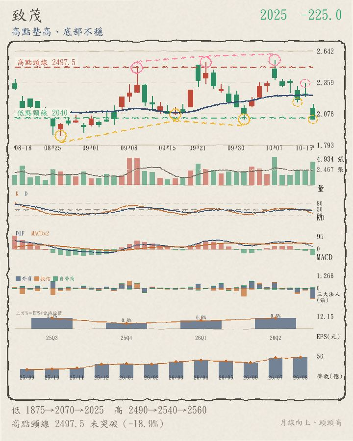
今天帶量收黑、跌破月線 2240.75，離高點頸線 2497.5 還差 18.9%，高點還在墊高（但底部沒同步墊高）。
- 月線位置：收盤 2025 在月線 2240.75 之下；5 日線 2234 也在月線之下（短均在下）；月線向上、5 日線走平或向下
- 量能：成交量是 20 日均量的 1.76 倍，比 20 日均量大不少；收黑卻量增，量價背離
- 關鍵價位：高點頸線 2497.5 還沒突破，差 18.9%；最近轉折高點 2560（低於 20.9%）；最近轉折低點 2025（高於 0.0%）
- 轉折結構：高點 2490、2540、2560 墊高 2.8%（頭頭高），但低點 1875、2070、2025 沒有同步墊高；還沒確認的轉折低點 10-13 2180、10-15 2025；還沒確認的轉折高點 10-14 2350（圖上虛線小圈）
高點墊高、底部不穩 成交金額 72.84 億・全榜第 44 名（上市第 35 名）
好條件 2/8：月線向上、頭頭高
不好條件 6/8：跌破前低、今日下跌、相對大盤弱、在月線之下、外資賣超、收盤跌破前一日低點
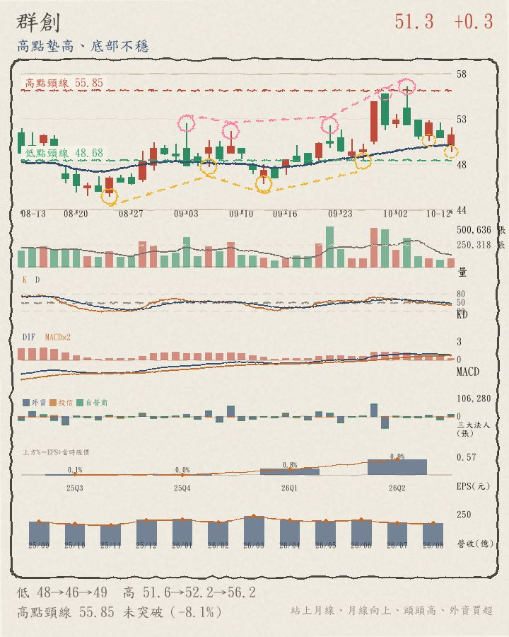
今天收黑、成交量也比平均少、跌破月線 50.462，跌破前一個轉折低點（高點頸線 51.9 還在收盤上方），高點還在墊高（但底部沒同步墊高）。
- 月線位置：收盤 48.3 在月線 50.462 之下；5 日線 50.3 也在月線之下（短均在下）；月線向上、5 日線走平或向下
- 量能：成交量是 20 日均量的 0.76 倍，比 20 日均量少很多
- 關鍵價位：高點頸線 51.9 還沒突破、還在收盤上方 6.9%；最近轉折高點 56.2（低於 14.1%）；最近轉折低點 48.55（低於 0.5%）
- 轉折結構：高點 51.6、52.2、56.2 墊高 8.9%（頭頭高），但低點 48、46.25、48.55 沒有同步墊高；還沒確認的轉折低點 10-12 49.5、10-15 48.3；還沒確認的轉折高點 10-01 55.5、10-14 51.4（圖上虛線小圈）
上升趨勢（底底高＋頭頭高） 成交金額 72.39 億・全榜第 45 名（上市第 36 名）
好條件 3/8：月線向上、底底高、頭頭高
不好條件 6/8：今日下跌、相對大盤弱、在月線之下、量增下跌（出貨）、外資賣超、收盤跌破前一日低點
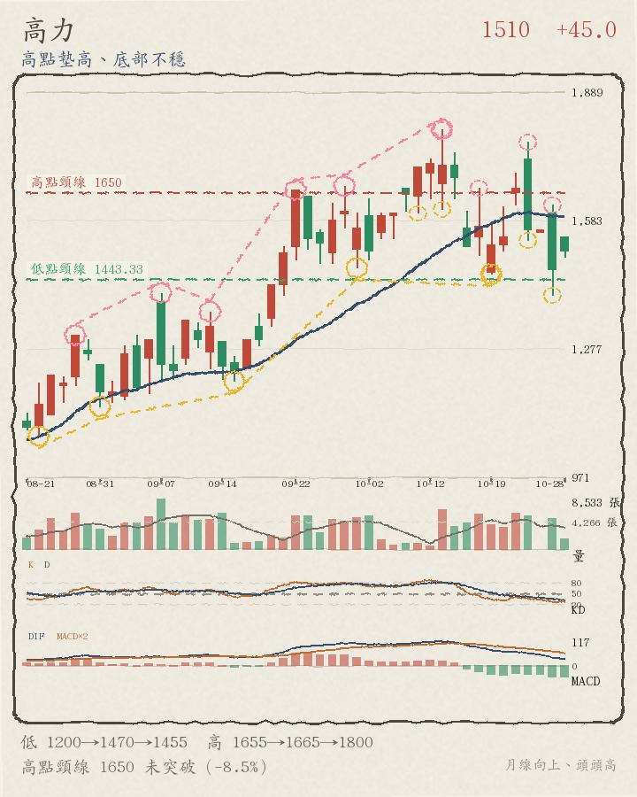
今天帶量收黑、跌破月線 1546.75，離高點頸線 1651.67 還差 8.0%，轉折結構仍是底底高＋頭頭高。
- 月線位置：收盤 1520 在月線 1546.75 之下；5 日線 1670 也在月線之上（短均在上）；月線向上、5 日線向上
- 量能：成交量是 20 日均量的 1.47 倍，比 20 日均量大不少；收黑卻量增，量價背離
- 關鍵價位：高點頸線 1651.67 還沒突破，差 8.0%；最近轉折高點 1665（低於 8.7%）；最近轉折低點 1470（高於 3.4%）
- 轉折結構：低點 1140、1200、1470 一路墊高 28.9%、高點 1365、1655、1665 也一路墊高 22.0%，是底底高＋頭頭高；還沒確認的轉折低點 10-13 1610、10-15 1520；還沒確認的轉折高點 10-02 1635、10-13 1800（圖上虛線小圈）
高點墊高、底部不穩 成交金額 70.26 億・全榜第 46 名（上市第 37 名）
好條件 2/8：月線向上、頭頭高
不好條件 7/8：跌破前低、今日下跌、相對大盤弱、在月線之下、量增下跌（出貨）、外資賣超、收盤跌破前一日低點
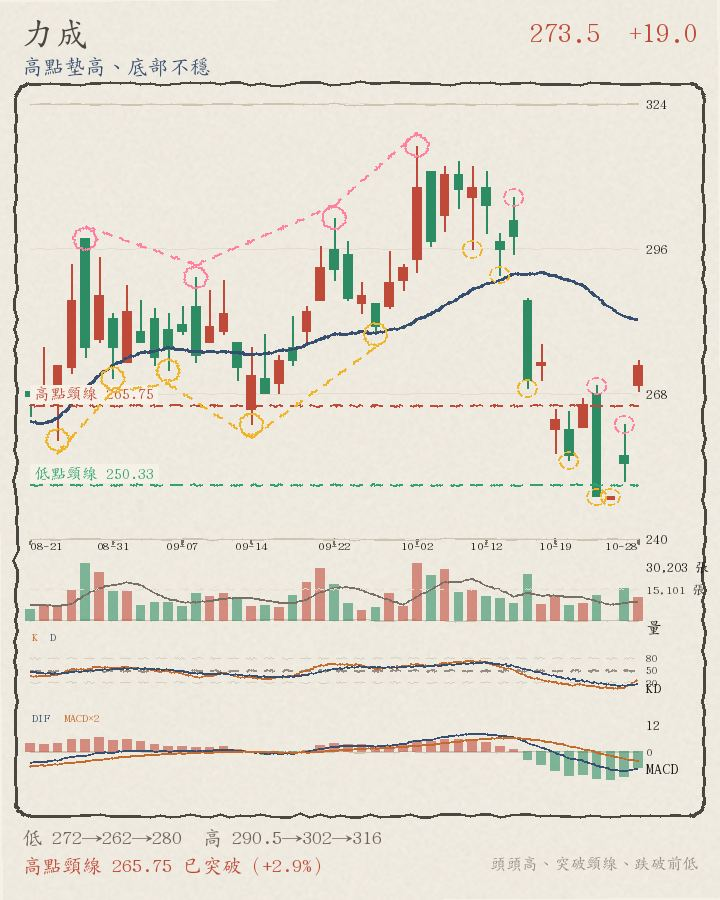
今天帶量收黑、跌破月線 291.15，跌破前一個轉折低點（高點頸線 298.5 還在收盤上方），高點還在墊高（但底部沒同步墊高）。
- 月線位置：收盤 270.5 在月線 291.15 之下；5 日線 295.5 也在月線之上（短均在上）；月線向上、5 日線走平或向下
- 量能：成交量是 20 日均量的 1.79 倍，比 20 日均量大不少；收黑卻量增，量價背離
- 關鍵價位：高點頸線 298.5 還沒突破、還在收盤上方 9.4%；最近轉折高點 316（低於 14.4%）；最近轉折低點 279.5（低於 3.2%）
- 轉折結構：高點 290.5、302、316 墊高 8.8%（頭頭高），但低點 272.5、262、279.5 沒有同步墊高；還沒確認的轉折低點 10-13 291、10-15 269；還沒確認的轉折高點 10-07 313、10-14 306（圖上虛線小圈）
區間或轉弱 成交金額 69.51 億・全榜第 47 名（上市第 38 名）
好條件 0/8：無
不好條件 8/8：跌破前低、今日下跌、相對大盤弱、在月線之下、量增下跌（出貨）、外資賣超、月線下彎、收盤跌破前一日低點
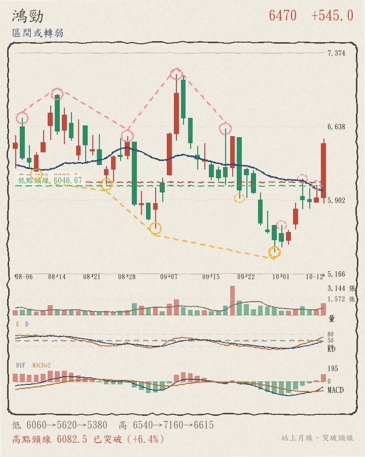
今天帶量收黑、跌破月線 5899.5，跌破前一個轉折低點（高點頸線 6556.67 還在收盤上方），轉折還沒走出明顯方向。
- 月線位置：收盤 5225 在月線 5899.5 之下；5 日線 5898 也在月線之下（短均在下）；月線走平或向下、5 日線向上
- 量能：成交量是 20 日均量的 1.49 倍，比 20 日均量大不少；收黑卻量增，量價背離
- 關鍵價位：高點頸線 6556.67 還沒突破、還在收盤上方 20.3%；最近轉折高點 6515（低於 19.8%）；最近轉折低點 5380（低於 2.9%）
- 轉折結構：低點 6060、5620、5380 與高點 7160、6615、6515 都沒有明顯遞增，屬於區間震盪或轉弱；還沒確認的轉折低點 10-12 5870、10-15 5205；還沒確認的轉折高點 10-01 5650、10-06 6115（圖上虛線小圈）
區間或轉弱 成交金額 68.94 億・全榜第 48 名（上市第 39 名）
好條件 1/8：相對大盤強
不好條件 7/8：跌破前低、今日下跌、在月線之下、量增下跌（出貨）、外資賣超、月線下彎、收盤跌破前一日低點

今天帶量收黑、跌破月線 11806.8，跌破前一個轉折低點（高點頸線 13196.7 還在收盤上方），轉折還沒走出明顯方向。
- 月線位置：收盤 9720 在月線 11806.8 之下；5 日線 10196 也在月線之下（短均在下）；月線走平或向下、5 日線走平或向下
- 量能：成交量是 20 日均量的 1.38 倍，比 20 日均量大不少；收黑卻量增，量價背離
- 關鍵價位：高點頸線 13196.7 還沒突破、還在收盤上方 26.3%；最近轉折高點 13500（低於 28.0%）；最近轉折低點 11700（低於 16.9%）
- 轉折結構：低點 13310、11665、11700 與高點 14200、13305、13500 都沒有明顯遞增，屬於區間震盪或轉弱；還沒確認的轉折低點 09-29 11900、10-15 9500；還沒確認的轉折高點 09-30 12785（圖上虛線小圈）
剛突破前高 成交金額 68.46 億・全榜第 49 名（上市第 40 名）
好條件 3/8：站上月線、月線向上、頭頭高
不好條件 5/8：今日下跌、相對大盤弱、量增下跌（出貨）、外資賣超、收盤跌破前一日低點
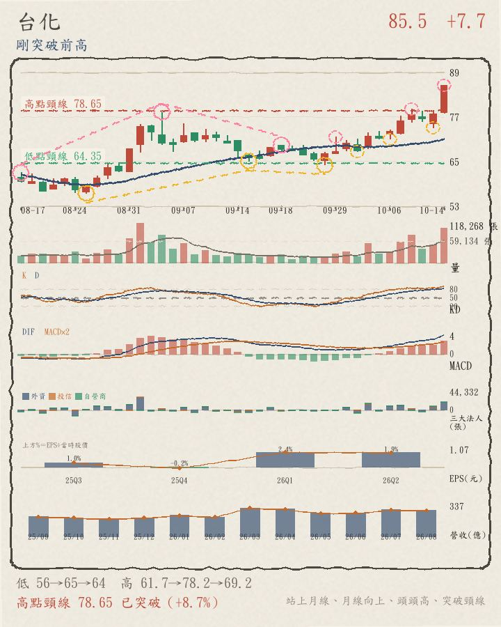
今天帶量收黑、站上月線 71.335，離高點頸線 78.65 還差 2.1%，高點還在墊高（但底部沒同步墊高）。
- 月線位置：收盤 77 在月線 71.335 之上；5 日線 78.94 也在月線之上（短均在上）；月線向上、5 日線向上
- 量能：成交量是 20 日均量的 2.46 倍，比 20 日均量大不少；收黑卻量增，量價背離
- 關鍵價位：高點頸線 78.65 還沒突破，差 2.1%；最近轉折高點 69.2（高於 11.3%）；最近轉折低點 63.8（高於 20.7%）
- 轉折結構：高點 61.7、78.2、69.2 墊高 24.4%（頭頭高），但低點 56.1、64.9、63.8 沒有同步墊高；還沒確認的轉折低點 10-13 74、10-15 77；還沒確認的轉折高點 10-08 79.1、10-15 86.1（圖上虛線小圈）
底部墊高、未過前高 成交金額 68.46 億・全榜第 50 名（上市第 41 名）
好條件 2/8：月線向上、底底高
不好條件 6/8：今日下跌、相對大盤弱、在月線之下、量增下跌（出貨）、外資賣超、收盤跌破前一日低點
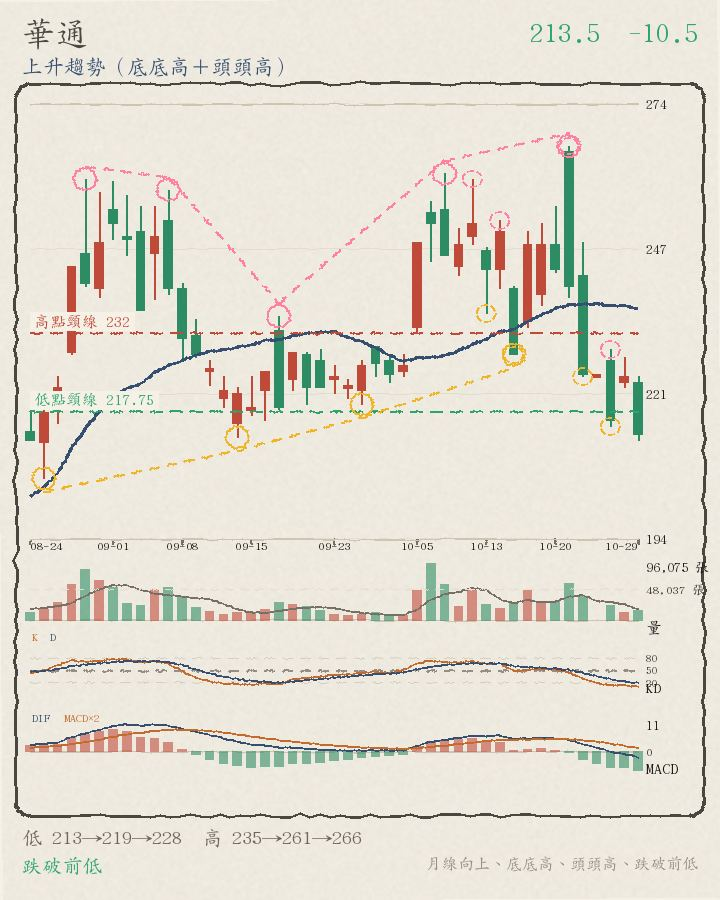
今天帶量收黑、跌破月線 232.625，離高點頸線 257.88 還差 11.6%，底部還在墊高（但高點沒同步創高）。
- 月線位置：收盤 228 在月線 232.625 之下；5 日線 244.4 也在月線之上（短均在上）；月線向上、5 日線向上
- 量能：成交量是 20 日均量的 1.14 倍，比 20 日均量大一些；收黑卻量增，量價背離
- 關鍵價位：高點頸線 257.88 還沒突破，差 11.6%；最近轉折高點 261（低於 12.6%）；最近轉折低點 219（高於 4.1%）
- 轉折結構：低點 205.5、213、219 墊高 6.6%（底底高），但高點 258、235、261 沒有同步創高；還沒確認的轉折低點 10-13 235.5、10-15 228；還沒確認的轉折高點 10-12 260、10-14 252.5（圖上虛線小圈）
貿聯-KY 3665 上市
2015 -220.0
高點墊高、底部不穩 成交金額 67.48 億・全榜第 51 名（上市第 42 名）
好條件 2/8：月線向上、頭頭高
不好條件 5/8：今日下跌、相對大盤弱、在月線之下、外資賣超、收盤跌破前一日低點
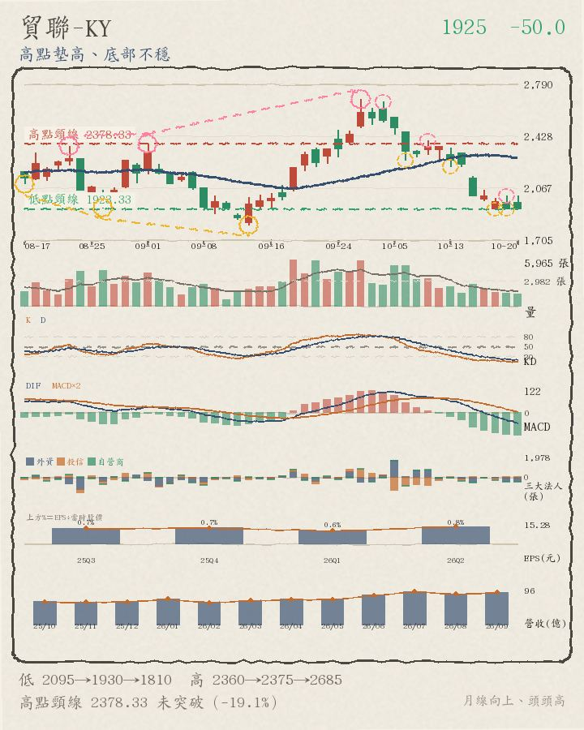
今天收黑、成交量也比平均少、跌破月線 2295.25，離高點頸線 2378.33 還差 15.3%，高點還在墊高（但底部沒同步墊高）。
- 月線位置：收盤 2015 在月線 2295.25 之下；5 日線 2245 也在月線之下（短均在下）；月線向上、5 日線走平或向下
- 量能：成交量是 20 日均量的 0.89 倍，比 20 日均量少一些
- 關鍵價位：高點頸線 2378.33 還沒突破，差 15.3%；最近轉折高點 2685（低於 25.0%）；最近轉折低點 1810（高於 11.3%）
- 轉折結構：高點 2360、2375、2685 墊高 13.8%（頭頭高），但低點 2095、1930、1810 沒有同步墊高；還沒確認的轉折低點 10-13 2215、10-15 2015；還沒確認的轉折高點 10-02 2670、10-08 2400（圖上虛線小圈）
剛突破前高 成交金額 67.37 億・全榜第 52 名（上市第 43 名）
好條件 3/8：站上月線、月線向上、頭頭高
不好條件 5/8：今日下跌、相對大盤弱、量增下跌（出貨）、外資賣超、收盤跌破前一日低點
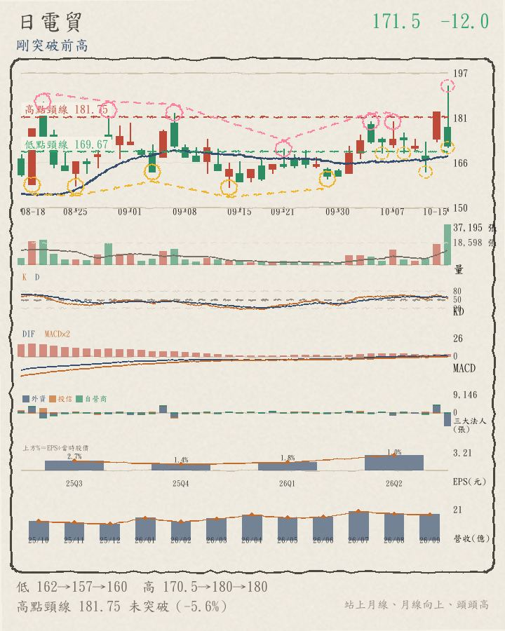
今天帶量收黑、站上月線 167.925，離高點頸線 181.75 還差 5.6%，高點還在墊高（但底部沒同步墊高）。
- 月線位置：收盤 171.5 在月線 167.925 之上；5 日線 173.5 也在月線之上（短均在上）；月線向上、5 日線向上
- 量能：成交量是 20 日均量的 7.87 倍，比 20 日均量大不少；收黑卻量增，量價背離
- 關鍵價位：高點頸線 181.75 還沒突破，差 5.6%；最近轉折高點 180（低於 4.7%）；最近轉折低點 160（高於 7.2%）
- 轉折結構：高點 170.5、180、180 墊高 6.9%（頭頭高），但低點 162.5、157、160 沒有同步墊高；還沒確認的轉折低點 10-13 162.5、10-15 171；還沒確認的轉折高點 10-15 192.5（圖上虛線小圈）
底部墊高、突破前高 成交金額 66.26 億・全榜第 53 名（上市第 44 名）
好條件 5/8：站上月線、月線向上、底底高、頭頭高、突破頸線
不好條件 5/8：今日下跌、相對大盤弱、量增下跌（出貨）、外資賣超、收盤跌破前一日低點

今天帶量收黑、站上月線 97.41，已站上高點頸線 90.2，轉折結構仍是底底高＋頭頭高。
- 月線位置：收盤 111.5 在月線 97.41 之上；5 日線 113.8 也在月線之上（短均在上）；月線向上、5 日線向上
- 量能：成交量是 20 日均量的 1.71 倍，比 20 日均量大不少；收黑卻量增，量價背離
- 關鍵價位：高點頸線 90.2 已站上；最近轉折高點 89.8（高於 24.2%）；最近轉折低點 80（高於 39.4%）
- 轉折結構：低點 65.4、68.6、80 一路墊高 22.3%、高點 76.5、90.6、89.8 也一路墊高 43.7%，是底底高＋頭頭高；還沒確認的轉折低點 10-13 105、10-15 108；還沒確認的轉折高點 10-08 114、10-14 129（圖上虛線小圈）
區間或轉弱 成交金額 63.58 億・全榜第 54 名（上市第 45 名）
好條件 0/8：無
不好條件 8/8：跌破前低、今日下跌、相對大盤弱、在月線之下、量增下跌（出貨）、外資賣超、月線下彎、收盤跌破前一日低點
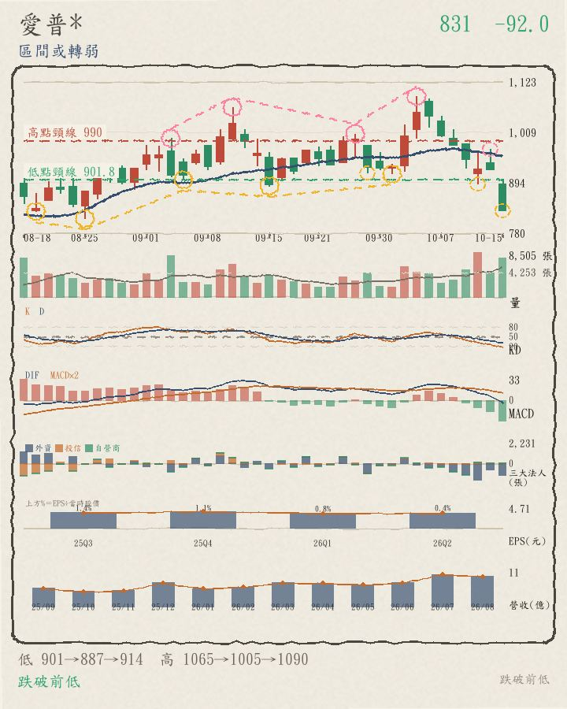
今天帶量收黑、跌破月線 954.25，跌破前一個轉折低點（高點頸線 990 還在收盤上方），轉折還沒走出明顯方向。
- 月線位置：收盤 831 在月線 954.25 之下；5 日線 921.4 也在月線之下（短均在下）；月線走平或向下、5 日線走平或向下
- 量能：成交量是 20 日均量的 2.04 倍，比 20 日均量大不少；收黑卻量增，量價背離
- 關鍵價位：高點頸線 990 還沒突破、還在收盤上方 16.1%；最近轉折高點 1090（低於 23.8%）；最近轉折低點 914（低於 9.1%）
- 轉折結構：低點 901、887、914 與高點 1065、1005、1090 都沒有明顯遞增，屬於區間震盪或轉弱；還沒確認的轉折低點 10-13 891、10-15 831；還沒確認的轉折高點 10-14 970（圖上虛線小圈）
矽力*-KY 6415 上市
466.5 -4.5
剛突破前高 成交金額 62.61 億・全榜第 55 名（上市第 46 名）
好條件 4/8：站上月線、月線向上、頭頭高、相對大盤強
不好條件 3/8：今日下跌、量增下跌（出貨）、外資賣超
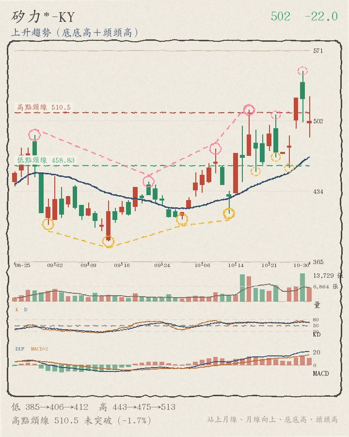
今天帶量收黑、站上月線 432.725，離高點頸線 499 還差 6.5%，高點還在墊高（但底部沒同步墊高）。
- 月線位置：收盤 466.5 在月線 432.725 之上；5 日線 453.7 也在月線之上（短均在上）；月線向上、5 日線向上
- 量能：成交量是 20 日均量的 5.60 倍，比 20 日均量大不少；收黑卻量增，量價背離
- 關鍵價位：高點頸線 499 還沒突破，差 6.5%；最近轉折高點 475（低於 1.8%）；最近轉折低點 406.5（高於 14.8%）
- 轉折結構：高點 488.5、443、475 墊高 4.7%（頭頭高），但低點 401.5、385、406.5 沒有同步墊高；還沒確認的轉折低點 09-29 408.5、10-13 412；還沒確認的轉折高點 10-15 497.5（圖上虛線小圈）
剛突破前高 成交金額 61.42 億・全榜第 56 名（上市第 47 名）
好條件 6/8：站上月線、月線向上、頭頭高、突破頸線、相對大盤強、量價攻擊（收紅＋大量）
不好條件 1/8：外資賣超
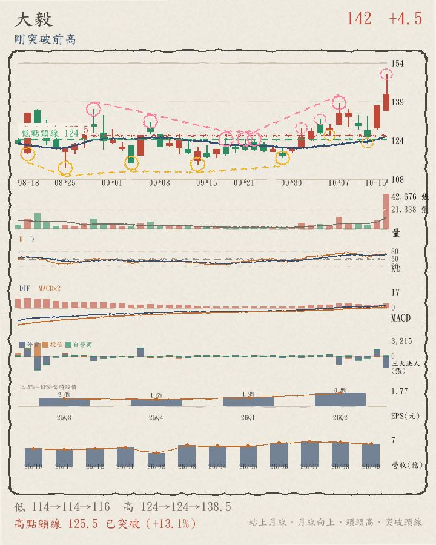
今天帶量收紅、站上月線 125.1，已站上高點頸線 125.5，高點還在墊高（但底部沒同步墊高）。
- 月線位置：收盤 142 在月線 125.1 之上；5 日線 133.7 也在月線之上（短均在上）；月線向上、5 日線向上
- 量能：成交量是 20 日均量的 11.95 倍，比 20 日均量大不少；收紅又量增，量價配合
- 關鍵價位：高點頸線 125.5 已站上；最近轉折高點 138.5（高於 2.5%）；最近轉折低點 116.5（高於 21.9%）
- 轉折結構：高點 124、124、138.5 墊高 8.3%（頭頭高），但低點 114.5、114、116.5 沒有同步墊高；還沒確認的轉折低點 10-06 125.5、10-13 122.5；還沒確認的轉折高點 10-05 132、10-15 150（圖上虛線小圈）
區間或轉弱 成交金額 59.99 億・全榜第 57 名（上市第 48 名）
好條件 0/8：無
不好條件 8/8：跌破前低、今日下跌、相對大盤弱、在月線之下、量增下跌（出貨）、外資賣超、月線下彎、收盤跌破前一日低點
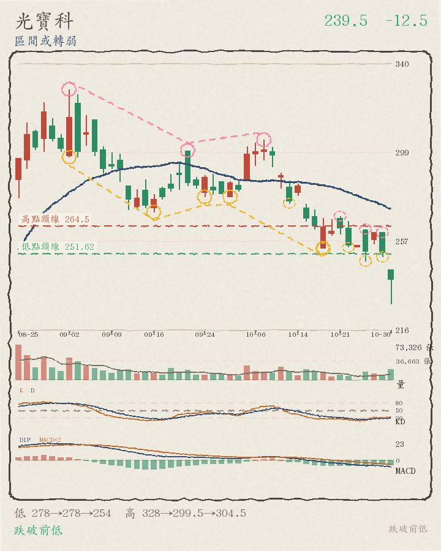
今天帶量收黑、跌破月線 284.525，跌破前一個轉折低點（高點頸線 302 還在收盤上方），轉折還沒走出明顯方向。
- 月線位置：收盤 268 在月線 284.525 之下；5 日線 282.5 也在月線之下（短均在下）；月線走平或向下、5 日線走平或向下
- 量能：成交量是 20 日均量的 1.47 倍，比 20 日均量大不少；收黑卻量增，量價背離
- 關鍵價位：高點頸線 302 還沒突破、還在收盤上方 11.3%；最近轉折高點 304.5（低於 12.0%）；最近轉折低點 278（低於 3.6%）
- 轉折結構：低點 271、278、278 與高點 328、299.5、304.5 都沒有明顯遞增，屬於區間震盪或轉弱；還沒確認的轉折低點 10-13 275、10-15 266.5；還沒確認的轉折高點 09-29 288.5、10-01 285（圖上虛線小圈）
高點墊高、底部不穩 成交金額 56.64 億・全榜第 59 名（上市第 49 名）
好條件 7/8：站上月線、月線向上、頭頭高、突破頸線、相對大盤強、外資買超、量價攻擊（收紅＋大量）
不好條件 0/8：無

今天帶量收紅、站上月線 69.42，已站上高點頸線 70.54，高點還在墊高（但底部沒同步墊高）。
- 月線位置：收盤 72.9 在月線 69.42 之上；5 日線 70.6 也在月線之上（短均在上）；月線向上、5 日線向上
- 量能：成交量是 20 日均量的 2.39 倍，比 20 日均量大不少；收紅又量增，量價配合
- 關鍵價位：高點頸線 70.54 已站上；最近轉折高點 72（高於 1.3%）；最近轉折低點 67.3（高於 8.3%）
- 轉折結構：高點 67.3、69.5、72 墊高 7.0%（頭頭高），但低點 66、67.1、67.3 沒有同步墊高；還沒確認的轉折低點 09-29 67.3、10-05 67.3；還沒確認的轉折高點 10-13 72、10-15 73.6（圖上虛線小圈）
剛突破前高 成交金額 55.81 億・全榜第 61 名（上市第 50 名）
好條件 3/8：站上月線、月線向上、頭頭高
不好條件 4/8：今日下跌、相對大盤弱、外資賣超、收盤跌破前一日低點

今天收黑、成交量也比平均少、站上月線 663，離高點頸線 821.5 還差 2.7%，高點還在墊高（但底部沒同步墊高）。
- 月線位置：收盤 799 在月線 663 之上；5 日線 813.6 也在月線之上（短均在上）；月線向上、5 日線向上
- 量能：成交量是 20 日均量的 0.40 倍，比 20 日均量少很多
- 關鍵價位：高點頸線 821.5 還沒突破，差 2.7%；最近轉折高點 555（高於 44.0%）；最近轉折低點 482（高於 65.8%）
- 轉折結構：高點 387.5、599、555 墊高 54.6%（頭頭高），但低點 237、493.5、482 沒有同步墊高；還沒確認的轉折低點 10-13 731、10-15 779；還沒確認的轉折高點 10-12 825、10-14 858（圖上虛線小圈）
高點墊高、底部不穩 成交金額 225.61 億・全榜第 12 名（上櫃第 1 名）
好條件 3/8：站上月線、月線向上、頭頭高
不好條件 5/8：今日下跌、相對大盤弱、量增下跌（出貨）、外資賣超、收盤跌破前一日低點
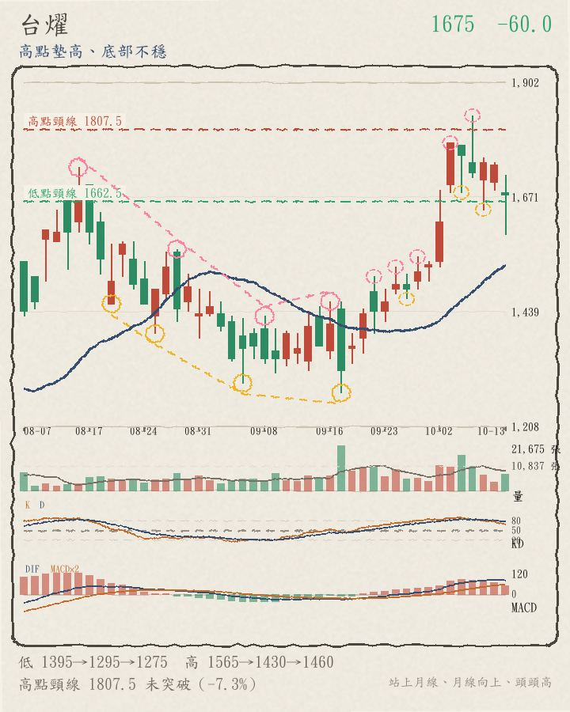
今天帶量收黑、站上月線 1560.5，離高點頸線 1786.67 還差 9.0%，高點還在墊高（但底部沒同步墊高）。
- 月線位置：收盤 1625 在月線 1560.5 之上；5 日線 1698 也在月線之上（短均在上）；月線向上、5 日線向上
- 量能：成交量是 20 日均量的 1.51 倍，比 20 日均量大不少；收黑卻量增，量價背離
- 關鍵價位：高點頸線 1786.67 還沒突破，差 9.0%；最近轉折高點 1835（低於 11.4%）；最近轉折低點 1275（高於 27.5%）
- 轉折結構：高點 1430、1460、1835 墊高 28.3%（頭頭高），但低點 1395、1295、1275 沒有同步墊高；還沒確認的轉折低點 10-13 1595、10-15 1605；還沒確認的轉折高點 10-05 1780、10-14 1745（圖上虛線小圈）
區間或轉弱 成交金額 161.23 億・全榜第 18 名（上櫃第 2 名）
好條件 1/8：月線向上
不好條件 6/8：今日下跌、相對大盤弱、在月線之下、量增下跌（出貨）、外資賣超、收盤跌破前一日低點

今天帶量收黑、跌破月線 1028.25，離高點頸線 1018.75 還差 9.4%，轉折還沒走出明顯方向。
- 月線位置：收盤 923 在月線 1028.25 之下；5 日線 1040.6 也在月線之上（短均在上）；月線向上、5 日線走平或向下
- 量能：成交量是 20 日均量的 1.40 倍，比 20 日均量大不少；收黑卻量增，量價背離
- 關鍵價位：高點頸線 1018.75 還沒突破，差 9.4%；最近轉折高點 1260（低於 26.7%）；最近轉折低點 872（高於 5.8%）
- 轉折結構：低點 931、875、872 與高點 1015、1010、1260 都沒有明顯遞增，屬於區間震盪或轉弱；還沒確認的轉折低點 10-06 1145、10-15 918（圖上虛線小圈）
區間或轉弱 成交金額 95.05 億・全榜第 34 名（上櫃第 3 名）
好條件 0/8：無
不好條件 8/8：跌破前低、今日下跌、相對大盤弱、在月線之下、量增下跌（出貨）、外資賣超、月線下彎、收盤跌破前一日低點

今天帶量收黑、跌破月線 18621.5，跌破前一個轉折低點（高點頸線 18381.7 還在收盤上方），轉折還沒走出明顯方向。
- 月線位置：收盤 15945 在月線 18621.5 之下；5 日線 17195 也在月線之下（短均在下）；月線走平或向下、5 日線走平或向下
- 量能：成交量是 20 日均量的 2.98 倍，比 20 日均量大不少；收黑卻量增，量價背離
- 關鍵價位：高點頸線 18381.7 還沒突破、還在收盤上方 13.3%；最近轉折高點 19895（低於 19.9%）；最近轉折低點 15975（低於 0.2%）
- 轉折結構：低點 14600、17170、15975 與高點 19795、21800、19895 都沒有明顯遞增，屬於區間震盪或轉弱；還沒確認的轉折低點 10-13 16930、10-15 15750；還沒確認的轉折高點 10-12 18080、10-14 18465（圖上虛線小圈）
區間或轉弱 成交金額 90.2 億・全榜第 36 名（上櫃第 4 名）
好條件 0/8：無
不好條件 8/8：跌破前低、今日下跌、相對大盤弱、在月線之下、量增下跌（出貨）、外資賣超、月線下彎、收盤跌破前一日低點

今天帶量收黑、跌破月線 2064.25，跌破前一個轉折低點（高點頸線 2180 還在收盤上方），轉折還沒走出明顯方向。
- 月線位置：收盤 1830 在月線 2064.25 之下；5 日線 1975 也在月線之下（短均在下）；月線走平或向下、5 日線走平或向下
- 量能：成交量是 20 日均量的 1.91 倍，比 20 日均量大不少；收黑卻量增，量價背離
- 關鍵價位：高點頸線 2180 還沒突破、還在收盤上方 16.1%；最近轉折高點 2350（低於 22.1%）；最近轉折低點 2080（低於 12.0%）
- 轉折結構：低點 1970、1900、2080 與高點 2195、2160、2350 都沒有明顯遞增，屬於區間震盪或轉弱；還沒確認的轉折低點 10-13 1905、10-15 1800；還沒確認的轉折高點 09-30 2215、10-12 2115（圖上虛線小圈）
剛突破前高 成交金額 86.22 億・全榜第 37 名（上櫃第 5 名）
好條件 4/8：站上月線、月線向上、頭頭高、突破頸線
不好條件 5/8：今日下跌、相對大盤弱、量增下跌（出貨）、外資賣超、收盤跌破前一日低點
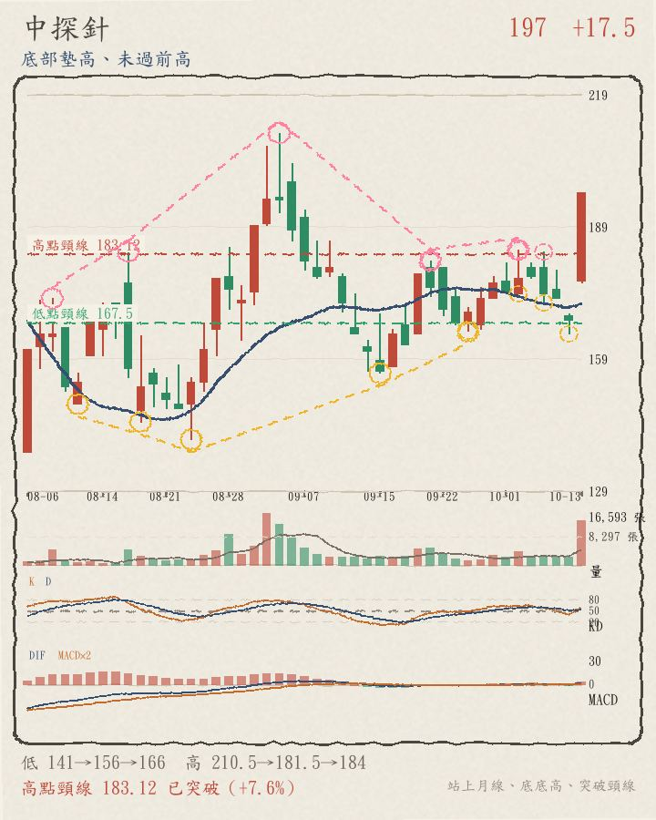
今天帶量收黑、站上月線 176.425，已站上高點頸線 183.12，高點還在墊高（但底部沒同步墊高）。
- 月線位置：收盤 195 在月線 176.425 之上；5 日線 191.2 也在月線之上（短均在上）；月線向上、5 日線向上
- 量能：成交量是 20 日均量的 9.15 倍，比 20 日均量大不少；收黑卻量增，量價背離
- 關鍵價位：高點頸線 183.12 已站上；最近轉折高點 184（高於 6.0%）；最近轉折低點 165（高於 18.2%）
- 轉折結構：高點 210.5、181.5、184 墊高 22.0%（頭頭高），但低點 156、165.5、165 沒有同步墊高；還沒確認的轉折低點 10-06 172、10-15 195；還沒確認的轉折高點 10-06 183.5、10-15 224.5（圖上虛線小圈）
區間或轉弱 成交金額 82.12 億・全榜第 40 名（上櫃第 6 名）
好條件 2/8：月線向上、突破頸線
不好條件 5/8：今日下跌、相對大盤弱、在月線之下、外資賣超、收盤跌破前一日低點
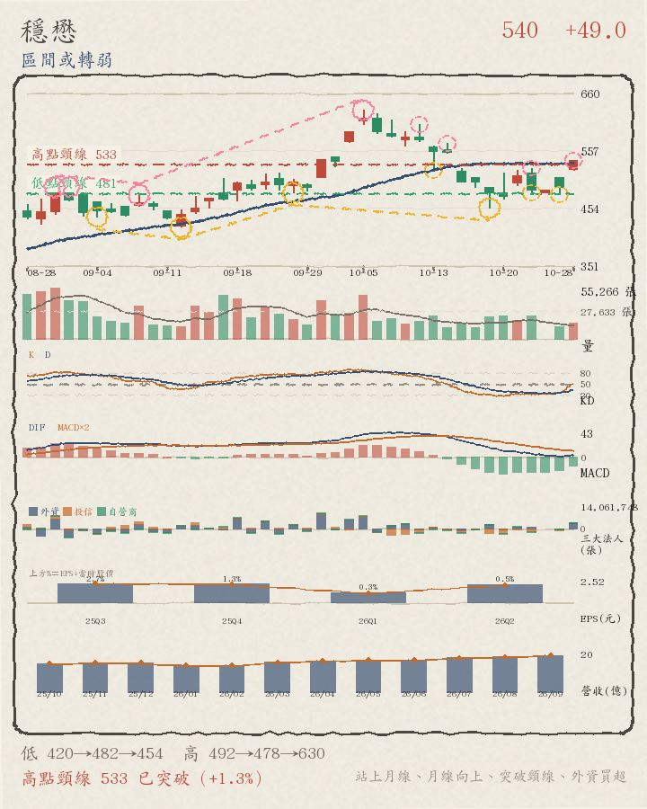
今天收黑、成交量也比平均少、跌破月線 531.15，已站上高點頸線 487.33，轉折還沒走出明顯方向。
- 月線位置：收盤 502 在月線 531.15 之下；5 日線 555.2 也在月線之上（短均在上）；月線向上、5 日線走平或向下
- 量能：成交量是 20 日均量的 0.61 倍，比 20 日均量少很多
- 關鍵價位：高點頸線 487.33 已站上；最近轉折高點 630（低於 20.3%）；最近轉折低點 482（高於 4.1%）
- 轉折結構：低點 438.5、420、482 與高點 492、478、630 都沒有明顯遞增，屬於區間震盪或轉弱；還沒確認的轉折低點 10-13 522、10-15 502；還沒確認的轉折高點 10-12 604、10-14 570（圖上虛線小圈）
高點墊高、底部不穩 成交金額 81.18 億・全榜第 41 名（上櫃第 7 名）
好條件 2/8：月線向上、頭頭高
不好條件 6/8：今日下跌、相對大盤弱、在月線之下、量增下跌（出貨）、外資賣超、收盤跌破前一日低點
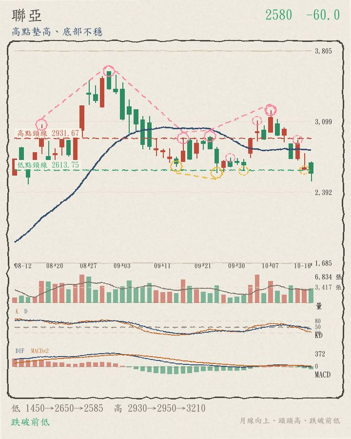
今天收黑、跌破月線 2819，離高點頸線 2931.67 還差 9.9%，高點還在墊高（但底部沒同步墊高）。
- 月線位置：收盤 2640 在月線 2819 之下；5 日線 2846 也在月線之上（短均在上）；月線向上、5 日線走平或向下
- 量能：成交量是 20 日均量的 1.03 倍，跟 20 日均量差不多
- 關鍵價位：高點頸線 2931.67 還沒突破，差 9.9%；最近轉折高點 3210（低於 17.8%）；最近轉折低點 2585（高於 2.1%）
- 轉折結構：高點 2930、2950、3210 墊高 9.6%（頭頭高），但低點 1450、2650、2585 沒有同步墊高；還沒確認的轉折低點 10-01 2605、10-15 2615；還沒確認的轉折高點 10-05 3105、10-14 2915（圖上虛線小圈）
底部墊高、未過前高 成交金額 80.63 億・全榜第 42 名（上櫃第 8 名）
好條件 2/8：月線向上、底底高
不好條件 5/8：今日下跌、相對大盤弱、在月線之下、外資賣超、收盤跌破前一日低點

今天收黑、成交量也比平均少、跌破月線 218.5，離高點頸線 229.33 還差 6.5%，底部還在墊高（但高點沒同步創高）。
- 月線位置：收盤 214.5 在月線 218.5 之下；5 日線 224.5 也在月線之上（短均在上）；月線向上、5 日線向上
- 量能：成交量是 20 日均量的 0.89 倍，比 20 日均量少一些
- 關鍵價位：高點頸線 229.33 還沒突破，差 6.5%；最近轉折高點 238（低於 9.9%）；最近轉折低點 211（高於 1.7%）
- 轉折結構：低點 171、208、211 墊高 23.4%（底底高），但高點 233、238、238 沒有同步創高；還沒確認的轉折低點 10-13 216.5、10-15 210.5；還沒確認的轉折高點 10-05 228、10-14 233（圖上虛線小圈）
底部墊高、突破前高 成交金額 75.85 億・全榜第 43 名（上櫃第 9 名）
好條件 4/8：站上月線、月線向上、底底高、頭頭高
不好條件 5/8：今日下跌、相對大盤弱、量增下跌（出貨）、外資賣超、收盤跌破前一日低點
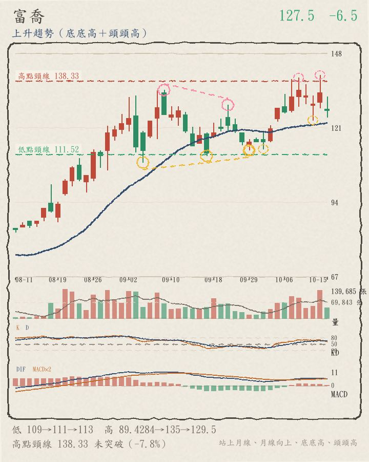
今天收黑、站上月線 123，離高點頸線 138.33 還差 7.8%，轉折結構仍是底底高＋頭頭高。
- 月線位置：收盤 127.5 在月線 123 之上；5 日線 131.9 也在月線之上（短均在上）；月線向上、5 日線向上
- 量能：成交量是 20 日均量的 1.01 倍，跟 20 日均量差不多
- 關鍵價位：高點頸線 138.33 還沒突破，差 7.8%；最近轉折高點 129.5（低於 1.5%）；最近轉折低點 113（高於 12.8%）
- 轉折結構：低點 108.571、111、113 一路墊高 4.1%、高點 89.4284、135、129.5 也一路墊高 8.5%，是底底高＋頭頭高；還沒確認的轉折低點 10-13 124、10-15 125；還沒確認的轉折高點 10-08 139.5、10-14 140.5（圖上虛線小圈）
高點墊高、底部不穩 成交金額 58.22 億・全榜第 58 名（上櫃第 10 名）
好條件 3/8：站上月線、月線向上、頭頭高
不好條件 5/8：今日下跌、相對大盤弱、量增下跌（出貨）、外資賣超、收盤跌破前一日低點
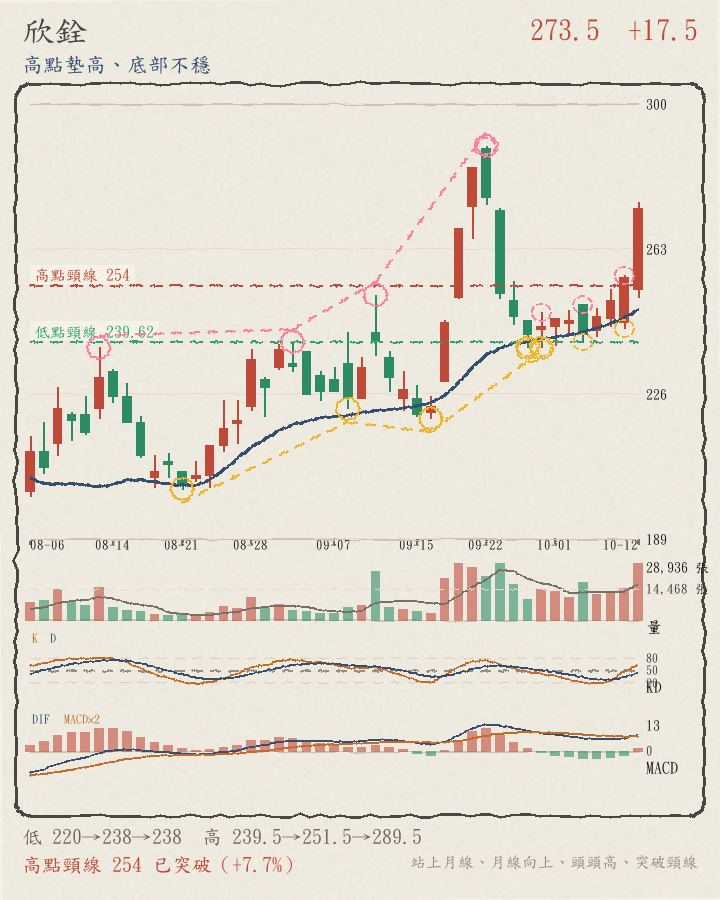
今天帶量收黑、站上月線 253.575，離高點頸線 290.5 還差 7.7%，高點還在墊高（但底部沒同步墊高）。
- 月線位置：收盤 268 在月線 253.575 之上；5 日線 268.6 也在月線之上（短均在上）；月線向上、5 日線向上
- 量能：成交量是 20 日均量的 1.24 倍，比 20 日均量大不少；收黑卻量增，量價背離
- 關鍵價位：高點頸線 290.5 還沒突破，差 7.7%；最近轉折高點 289.5（低於 7.4%）；最近轉折低點 238（高於 12.6%）
- 轉折結構：高點 239.5、251.5、289.5 墊高 20.9%（頭頭高），但低點 220、238、238 沒有同步墊高；還沒確認的轉折低點 10-08 243、10-15 260.5；還沒確認的轉折高點 10-12 277、10-14 291.5（圖上虛線小圈）
底部墊高、未過前高 成交金額 56.25 億・全榜第 60 名（上櫃第 11 名）
好條件 2/8：月線向上、底底高
不好條件 6/8：今日下跌、相對大盤弱、在月線之下、量增下跌（出貨）、外資賣超、收盤跌破前一日低點
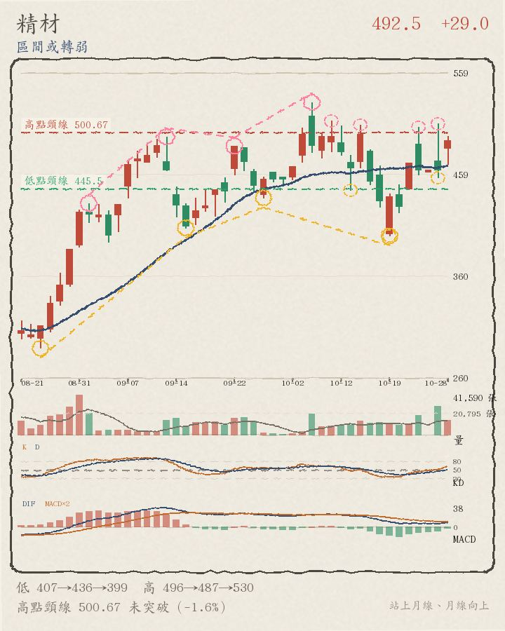
今天帶量收黑、跌破月線 463.425，離高點頸線 497 還差 9.0%，底部還在墊高（但高點沒同步創高）。
- 月線位置：收盤 452.5 在月線 463.425 之下；5 日線 479.1 也在月線之上（短均在上）；月線向上、5 日線走平或向下
- 量能：成交量是 20 日均量的 1.23 倍，比 20 日均量大不少；收黑卻量增，量價背離
- 關鍵價位：高點頸線 497 還沒突破，差 9.0%；最近轉折高點 530（低於 14.6%）；最近轉折低點 436.5（高於 3.7%）
- 轉折結構：低點 289、407、436.5 墊高 51.0%（底底高），但高點 496、487、530 沒有同步創高；還沒確認的轉折低點 10-13 444、10-15 449.5；還沒確認的轉折高點 10-08 512、10-14 508（圖上虛線小圈）
剛突破前高 成交金額 52.73 億・全榜第 62 名（上櫃第 12 名）
好條件 2/8：月線向上、頭頭高
不好條件 6/8：今日下跌、相對大盤弱、在月線之下、量增下跌（出貨）、外資賣超、收盤跌破前一日低點
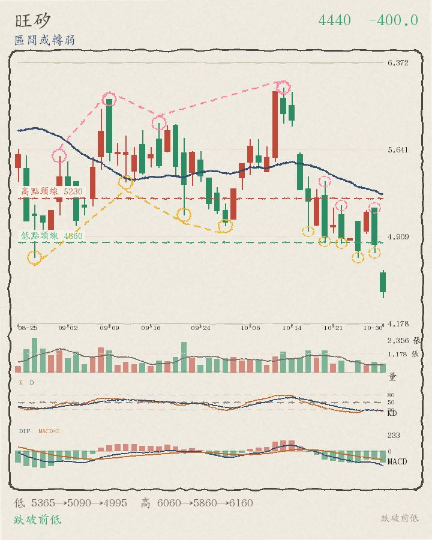
今天帶量收黑、跌破月線 5520.75，離高點頸線 6026.67 還差 12.1%，高點還在墊高（但底部沒同步墊高）。
- 月線位置：收盤 5300 在月線 5520.75 之下；5 日線 5766 也在月線之上（短均在上）；月線向上、5 日線向上
- 量能：成交量是 20 日均量的 1.35 倍，比 20 日均量大不少；收黑卻量增，量價背離
- 關鍵價位：高點頸線 6026.67 還沒突破，差 12.1%；最近轉折高點 5860（低於 9.6%）；最近轉折低點 4995（高於 6.1%）
- 轉折結構：高點 5585、6060、5860 墊高 5.1%（頭頭高），但低點 5365、5090、4995 沒有同步墊高；還沒確認的轉折低點 10-08 5450、10-15 5300；還沒確認的轉折高點 10-07 5725、10-13 6160（圖上虛線小圈）
區間或轉弱 成交金額 49.92 億・全榜第 63 名（上櫃第 13 名）
好條件 0/8：無
不好條件 7/8：跌破前低、今日下跌、相對大盤弱、在月線之下、量增下跌（出貨）、外資賣超、月線下彎

今天帶量收黑、跌破月線 571.7，跌破前一個轉折低點（高點頸線 582.33 還在收盤上方），轉折還沒走出明顯方向。
- 月線位置：收盤 542 在月線 571.7 之下；5 日線 562.4 也在月線之下（短均在下）；月線走平或向下、5 日線走平或向下
- 量能：成交量是 20 日均量的 1.71 倍，比 20 日均量大不少；收黑卻量增，量價背離
- 關鍵價位：高點頸線 582.33 還沒突破、還在收盤上方 6.9%；最近轉折高點 622（低於 12.9%）；最近轉折低點 545（低於 0.6%）
- 轉折結構：低點 572、501、545 與高點 658、650、622 都沒有明顯遞增，屬於區間震盪或轉弱；還沒確認的轉折低點 10-06 561、10-13 524；還沒確認的轉折高點 10-12 583、10-14 588（圖上虛線小圈）
底部墊高、突破前高 成交金額 48.33 億・全榜第 64 名（上櫃第 14 名）
好條件 5/8：站上月線、月線向上、底底高、頭頭高、突破頸線
不好條件 4/8：今日下跌、相對大盤弱、量增下跌（出貨）、外資賣超
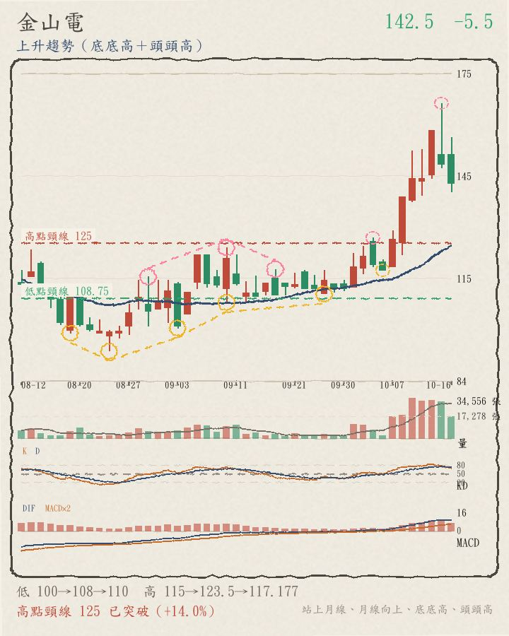
今天帶量收黑、站上月線 122.504，已站上高點頸線 125，轉折結構仍是底底高＋頭頭高。
- 月線位置：收盤 148 在月線 122.504 之上；5 日線 146.5 也在月線之上（短均在上）；月線向上、5 日線向上
- 量能：成交量是 20 日均量的 3.14 倍，比 20 日均量大不少；收黑卻量增，量價背離
- 關鍵價位：高點頸線 125 已站上；最近轉折高點 117.177（高於 26.3%）；最近轉折低點 110（高於 34.5%）
- 轉折結構：低點 100、107.5、110 一路墊高 10.0%、高點 115、123.5、117.177 也一路墊高 41.7%，是底底高＋頭頭高；還沒確認的轉折低點 10-06 117；還沒確認的轉折高點 10-05 126.5、10-15 166（圖上虛線小圈）
剛突破前高 成交金額 44.44 億・全榜第 65 名（上櫃第 15 名）
好條件 3/8：站上月線、月線向上、頭頭高
不好條件 5/8：今日下跌、相對大盤弱、量增下跌（出貨）、外資賣超、收盤跌破前一日低點
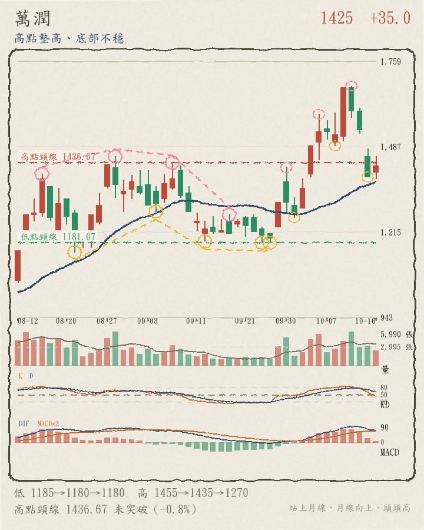
今天帶量收黑、站上月線 1364.25，離高點頸線 1436.67 還差 3.2%，高點還在墊高（但底部沒同步墊高）。
- 月線位置：收盤 1390 在月線 1364.25 之上；5 日線 1546 也在月線之上（短均在上）；月線向上、5 日線向上
- 量能：成交量是 20 日均量的 1.31 倍，比 20 日均量大不少；收黑卻量增，量價背離
- 關鍵價位：高點頸線 1436.67 還沒突破，差 3.2%；最近轉折高點 1270（高於 9.4%）；最近轉折低點 1180（高於 17.8%）
- 轉折結構：高點 1455、1435、1270 墊高 32.3%（頭頭高），但低點 1185、1180、1180 沒有同步墊高；還沒確認的轉折低點 10-08 1490、10-15 1390；還沒確認的轉折高點 10-06 1590、10-13 1680（圖上虛線小圈）
剛突破前高 成交金額 41.64 億・全榜第 66 名（上櫃第 16 名）
好條件 1/8：頭頭高
不好條件 6/8：今日下跌、相對大盤弱、在月線之下、量增下跌（出貨）、外資賣超、月線下彎

今天帶量收黑、跌破月線 77.34，離高點頸線 82.57 還差 8.2%，高點還在墊高（但底部沒同步墊高）。
- 月線位置：收盤 75.8 在月線 77.34 之下；5 日線 75.8 也在月線之下（短均在下）；月線走平或向下、5 日線走平或向下
- 量能：成交量是 20 日均量的 8.29 倍，比 20 日均量大不少；收黑卻量增，量價背離
- 關鍵價位：高點頸線 82.57 還沒突破，差 8.2%；最近轉折高點 80.7（低於 6.1%）；最近轉折低點 71.3（高於 6.3%）
- 轉折結構：高點 94.5、84、80.7 墊高 2.9%（頭頭高），但低點 80.2、75.3、71.3 沒有同步墊高；還沒確認的轉折低點 10-13 70、10-15 75.4；還沒確認的轉折高點 10-15 83（圖上虛線小圈）
區間或轉弱 成交金額 34.13 億・全榜第 67 名（上櫃第 17 名）
好條件 1/8：月線向上
不好條件 5/8：今日下跌、相對大盤弱、在月線之下、外資賣超、收盤跌破前一日低點
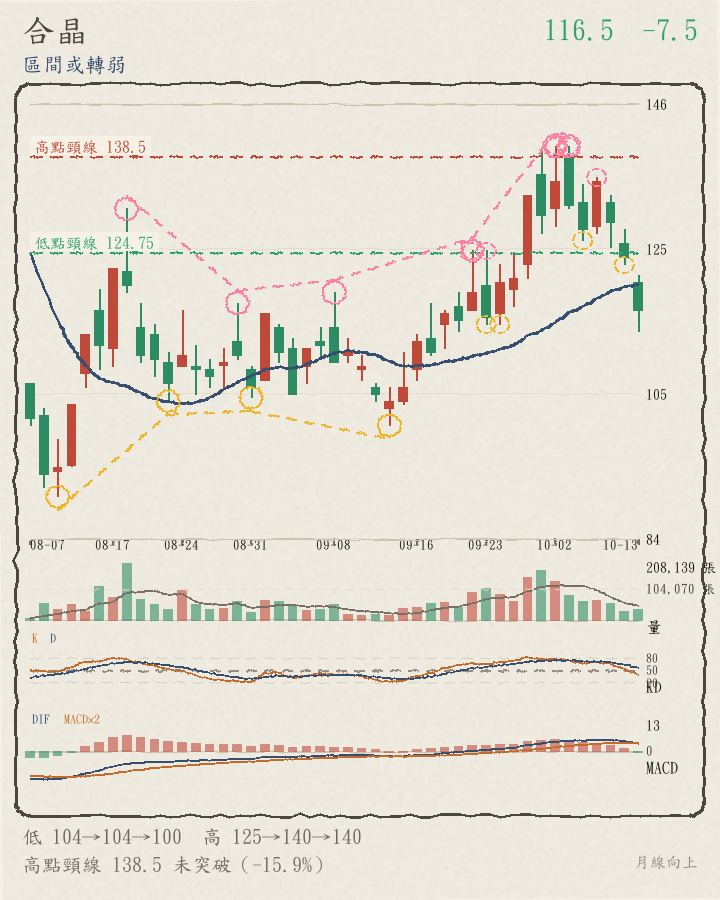
今天收黑、成交量也比平均少、跌破月線 121.275，離高點頸線 138.5 還差 20.6%，轉折還沒走出明顯方向。
- 月線位置：收盤 110 在月線 121.275 之下；5 日線 119.6 也在月線之下（短均在下）；月線向上、5 日線走平或向下
- 量能：成交量是 20 日均量的 0.41 倍，比 20 日均量少很多
- 關鍵價位：高點頸線 138.5 還沒突破，差 20.6%；最近轉折高點 140（低於 21.4%）；最近轉折低點 100（高於 10.0%）
- 轉折結構：低點 103.5、104、100 與高點 125、140、140 都沒有明顯遞增，屬於區間震盪或轉弱；還沒確認的轉折低點 10-13 113.5、10-15 110；還沒確認的轉折高點 10-07 135.5（圖上虛線小圈）
上升趨勢（底底高＋頭頭高） 成交金額 31.55 億・全榜第 68 名（上櫃第 18 名）
好條件 3/8：月線向上、底底高、頭頭高
不好條件 6/8：今日下跌、相對大盤弱、在月線之下、量增下跌（出貨）、外資賣超、收盤跌破前一日低點

今天收黑、跌破月線 2988.5，離高點頸線 2975 還差 10.8%，轉折結構仍是底底高＋頭頭高。
- 月線位置：收盤 2655 在月線 2988.5 之下；5 日線 2821 也在月線之下（短均在下）；月線向上、5 日線走平或向下
- 量能：成交量是 20 日均量的 1.02 倍，跟 20 日均量差不多
- 關鍵價位：高點頸線 2975 還沒突破，差 10.8%；最近轉折高點 3635（低於 27.0%）；最近轉折低點 2530（高於 4.9%）
- 轉折結構：低點 1995、2090、2530 一路墊高 26.8%、高點 2720、2875、3635 也一路墊高 33.6%，是底底高＋頭頭高；還沒確認的轉折低點 10-13 2690、10-15 2655；還沒確認的轉折高點 10-14 2955（圖上虛線小圈）
高點墊高、底部不穩 成交金額 31.16 億・全榜第 69 名（上櫃第 19 名）
好條件 2/8：月線向上、頭頭高
不好條件 6/8：今日下跌、相對大盤弱、在月線之下、量增下跌（出貨）、外資賣超、收盤跌破前一日低點
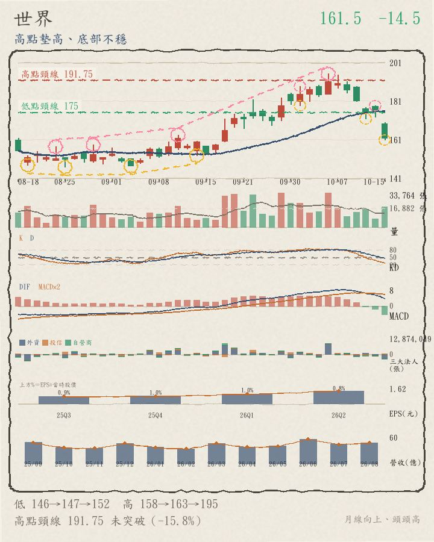
今天帶量收黑、跌破月線 175.65，離高點頸線 191.75 還差 15.8%，高點還在墊高（但底部沒同步墊高）。
- 月線位置：收盤 161.5 在月線 175.65 之下；5 日線 176 也在月線之上（短均在上）；月線向上、5 日線走平或向下
- 量能：成交量是 20 日均量的 1.06 倍，比 20 日均量大一些；收黑卻量增，量價背離
- 關鍵價位：高點頸線 191.75 還沒突破，差 15.8%；最近轉折高點 195（低於 17.2%）；最近轉折低點 152.5（高於 5.9%）
- 轉折結構：高點 158、163、195 墊高 23.4%（頭頭高），但低點 146.5、147、152.5 沒有同步墊高；還沒確認的轉折低點 10-13 171.5、10-15 160.5；還沒確認的轉折高點 10-01 188.5、10-14 178.5（圖上虛線小圈）
高點墊高、底部不穩 成交金額 29.45 億・全榜第 70 名（上櫃第 20 名）
好條件 3/8：月線向上、頭頭高、外資買超
不好條件 4/8：今日下跌、相對大盤弱、在月線之下、收盤跌破前一日低點
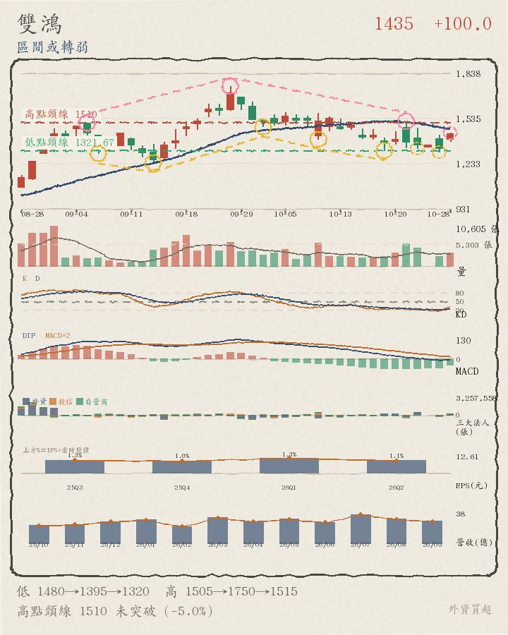
今天收黑、成交量也比平均少、跌破月線 1507，離高點頸線 1572.5 還差 10.3%，高點還在墊高（但底部沒同步墊高）。
- 月線位置：收盤 1410 在月線 1507 之下；5 日線 1487 也在月線之下（短均在下）；月線向上、5 日線走平或向下
- 量能：成交量是 20 日均量的 0.54 倍，比 20 日均量少很多
- 關鍵價位：高點頸線 1572.5 還沒突破，差 10.3%；最近轉折高點 1750（低於 19.4%）；最近轉折低點 1395（高於 1.1%）
- 轉折結構：高點 1080、1505、1750 墊高 62.0%（頭頭高），但低點 1240、1480、1395 沒有同步墊高；還沒確認的轉折低點 10-05 1490、10-15 1400；還沒確認的轉折高點 10-05 1575、10-08 1570（圖上虛線小圈）